27 March
Prof. Cheng Mei-ChunNTU
We arrived with no plants and no protocol. She showed us how her group grows Arabidopsis on agar and in hydroponics, gave us seeds, and told us to start on agar plates before moving carefully to soil.
On this page
We cultivated Arabidopsis thaliana using three experimental systems, agar plates, hydroponic boxes and soil pots, to evaluate the effects of our bioprotectants under different growing conditions. Each system offered a different balance between experimental control and environmental realism: agar plates provided highly controlled conditions, soil more closely represented natural growing environments, and hydroponics offered an intermediate approach.
All three systems followed the same six-step experimental framework, with adjustments to the cultivation setup, bioprotectant application methods, and measurable plant responses according to the characteristics of each system.
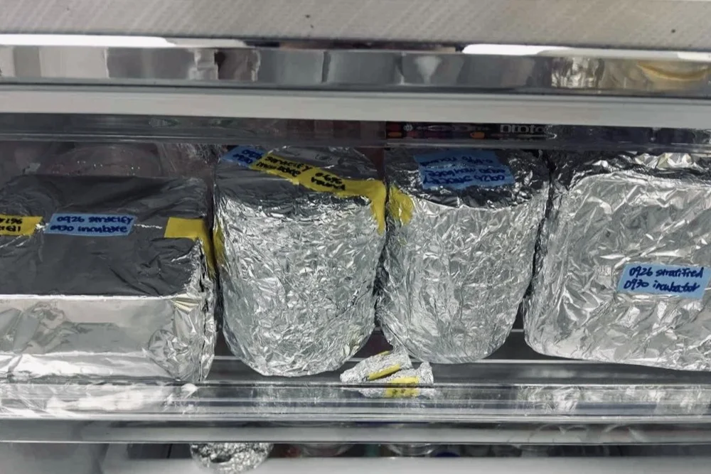
Four days of stratification at 4 °C synchronizes germination, so that the phenotype we read later belongs to the stressor and not to seedlings that started at different times. Stratification suppresses the master dormancy gene DELAY OF GERMINATION 1 (DOG1) and its downstream regulators, shifting the hormonal balance from abscisic acid towards gibberellins and weakening the seed coat enough for the radicle to emerge [15].
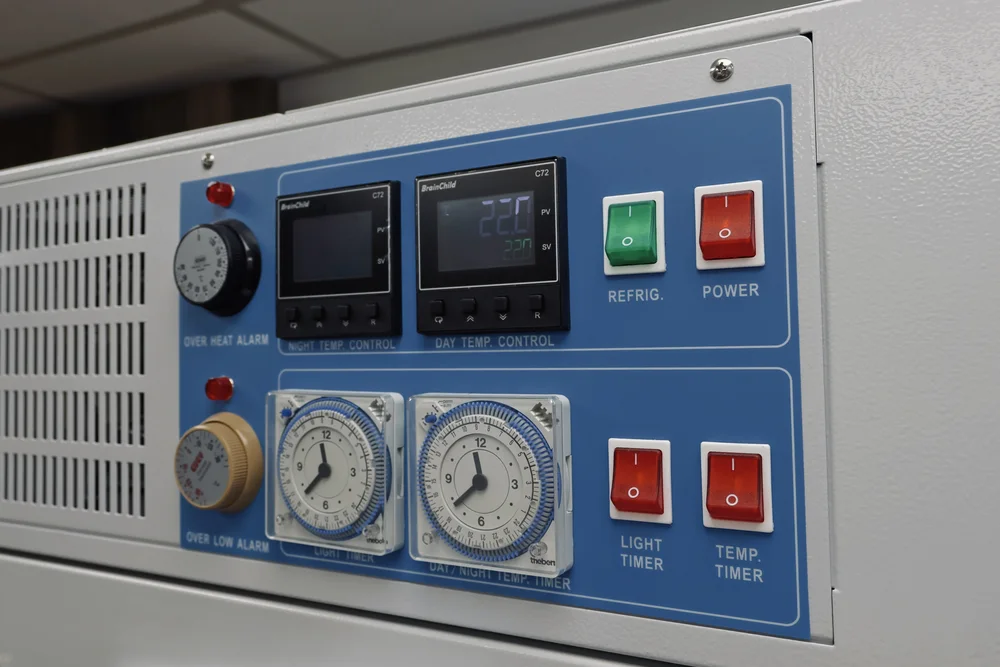
Seedlings move from the 4 °C refrigerator into the growth chamber at 22 °C and 60% RH; for the salinity agar sets, the day of transfer counts as day 0. A newly germinated seedling has fragile cotyledons and a root system too slight to carry a harsh treatment, so each platform keeps its own pre-growth window: long enough for the cotyledons to green, the first true leaves to appear and the primary root to extend.
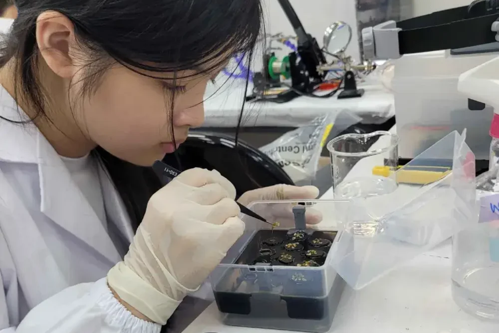
Seedlings are matched for root length and laid tip-first on a drawn baseline, so all growth is measured from day 0.
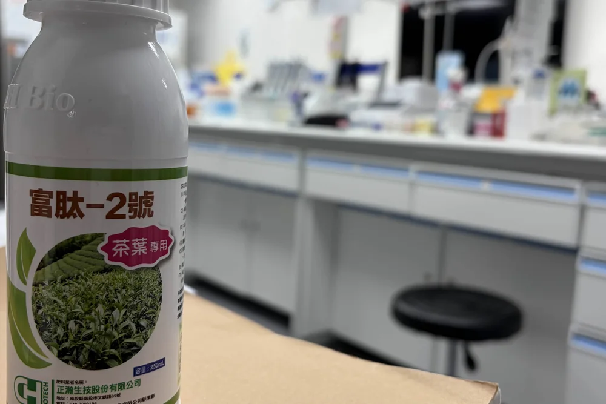
Every set carries three intervention timings against an untreated control: pre-treatment a day before the stress, co-treatment with it, post-treatment a day after. The three stand for the phases of a stress at which a farmer could still reach for a microbial inoculant, so the screen tests when a protectant arrives as well as whether it works.
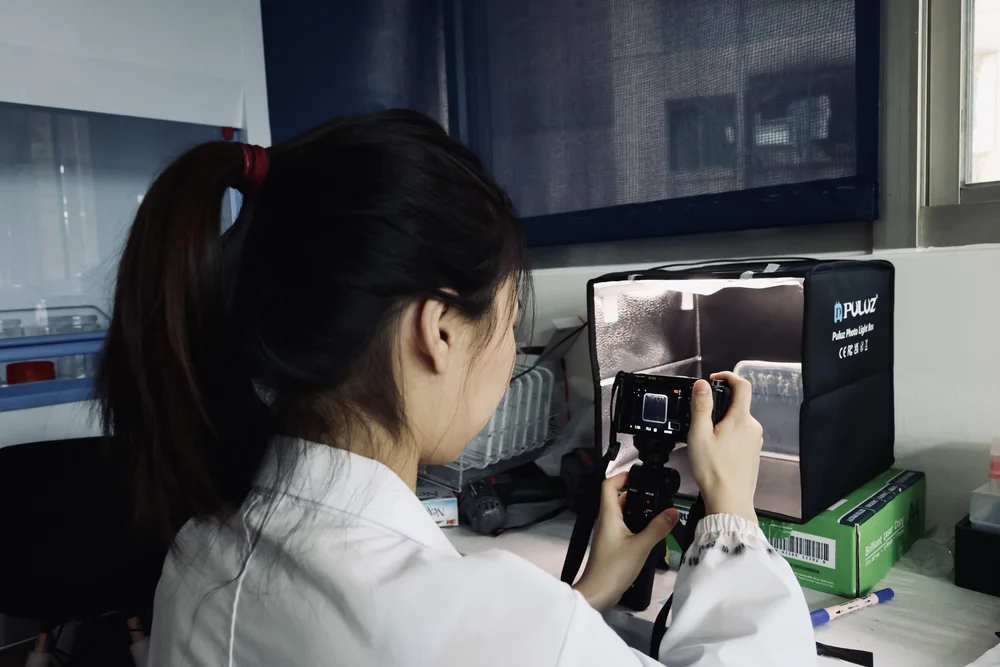
Plates, racks and pots are photographed once a day for five to seven days against a black background, and the phenotype is written down as it appears: bleaching of the leaves, contamination, the direction a root has taken. Contaminated plates are logged and excluded.
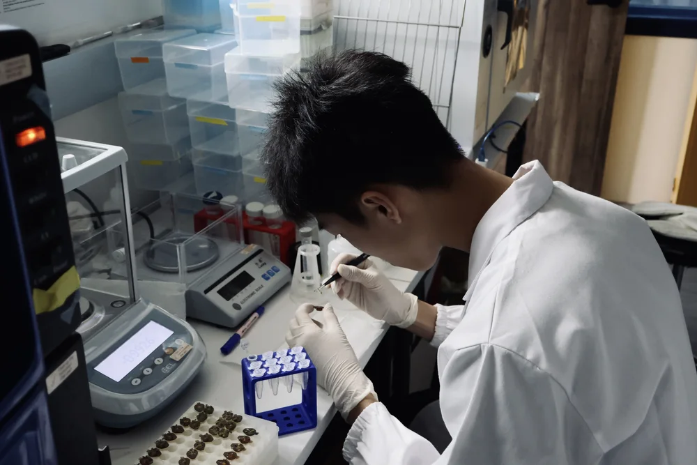
Three quantitative readouts, each with a different limitation, and the phenotype notes beside them. Which readouts a run can carry depends on the platform: root length needs a vertical plate to grow along, and leaf area stays qualitative wherever the rosettes overlap.

Agar trials were conducted to fine-tune protectant treatments and NaCl stress within a controlled laboratory environment, ensuring uniform nutrient availability and precise stress exposure. This setup enabled the evaluation and screening of protectant efficacy, helping identify top performing protectant candidates while establishing clear physiological baselines prior to testing in complex soil systems. Furthermore, agar media provide essential nutrients and an accelerated timeframe for observing early physiological changes in Arabidopsis seedlings, facilitating rapid and high-throughput testing across subsequent experimental iterations.
Salinity stress
A total of 11 agar and 2 soil experimental sets were conducted under NaCl-induced salt stress to evaluate the efficacy of different protectants.
Heat stress
A total of 3 agar and 2 soil experimental sets were conducted under 5 days of 37 °C-induced heat stress to evaluate the efficacy of different protectants.
Targeting heat stress, we took inspiration from Auverlot et al. [4] for prolonged thermo priming assays protocol designing. Initially, seeds are germinated and grown on Murashige and Skoog (MS) agar plates at 22 °C. Until the seedlings are grown to 10 days old, they’re held at 37 °C for 5 days to induce acquired thermotolerance prior to subsequent higher stress damage, and then returned to 22 °C for 5 days of recovery. Following recovery, seedling survival and physiological damage are assessed and analyzed via multiple quantitative readouts: fresh weight, chlorophyll content, and anthocyanin measurement. Both the agar and soil based thermo priming assays are established based on this foundational framework and methodology, with specific parameters refined to accommodate our experimental setups.
At the beginning of the plant trials we built the protocol and looked at how the plants answered NaCl and a first range of trehalose concentrations: trehalose at 0.125, 0.5 and 1 mM, NaCl at 50, 100 and 150 mM. We soon found 150 mM NaCl too strong, the plants drying out quickly under the osmotic stress. Trehalose at 1 mM was toxic, and both 1 and 0.5 mM held growth back. From then on the salinity sets ran at 75 and 100 mM NaCl, with trehalose at 0, 5 and 10 mM.
From experimental set 7 onwards, every set tests protectant effectiveness by the timing of its application. Each one carries a control, a pre-treatment, a co-treatment and a post-treatment group, with the protectant going on one day before the heat or salt stress and one day after it. This is the part of the screen that speaks to the rest of ReLEAF: a protectant that has to reach the plant before the stress surge is the argument for the bioreactor, and for the stress sensors and the AIoT forecast that tell it when to run.
Phase 1 · Trehalose + NaCl combinations
In phase 1 of trehalose testing (3 sets of pre-tests and 4 sets of official experiments) fine tuned concentrations of trehalose were added directly into the mixture with agar before autoclaving, meaning each experimental group holds its own trehalose and salinity concentration without any further contact. We selected vertical planting of agar plates to allow clearer and better visions for root length observation and analysis.
On Day 0, sterilized Arabidopsis seeds were vernalized on ½ MS neutral vertical agar plates for 4 days at 4 °C, and moved to the incubator for 4 days germination. On day 8, 4 days old Arabidopsis seedlings were transferred to each of the newly made vertical salinity agar plates containing a corresponding mixture of trehalose with NaCl. During the transferring process, we screen for seedlings with similar root lengths and similar growth levels, and place 12 seedlings per salinity plate with each of their tips of the roots onto a straight baseline drawn by a marker. Thus we could immediately start observing the seedling's root length difference and physiological changes after they’re exposed to different concentrations of NaCl and trehalose, evaluating the rescue effectiveness and growth for each combination over a course of 14 days.
Phase 2 · CH Bio peptide + NaCl
Using commercial CH Bio peptide, the primary objective is to evaluate the efficacy of commercial protectants’ effectiveness and identify its best application timing in response to the exact point where salinity stress hits. Therefore, CH Bio peptide application is categorized into 3 treatment timing groups: pre-treatment, co-treatment, and post-treatment. Different treatment timings are essential connecting to our project goal, “to supply protectants at the optimal timing before stress harms the plants”. These 3 treatment timing groups and the control group (no protectant) were each subjected to three NaCl concentrations (0 mM, 75 mM, and 100 mM), giving a total of 12 experimental conditions.
Looking at the entire experiment timeline, on day 0, Arabidopsis seeds were stratified on ½ MS neutral agar for 4 days at 4 °C, then transferred to a growth chamber for 4 days germination. Protectant applications were initiated subsequently starting from Day 8, and administered at 24-hour intervals between each treatment timing. Treatment timings can be considered as another set of days (Day −1: pre-treatment, Day 0: NaCl + co-treatment, Day 1: post-treatment). Thus, the day of salt stress application is Day 0, whereas NaCl (75 mM and 100 mM NaCl) was applied to all corresponding treatment groups, coinciding with the application for the co-treatment group.
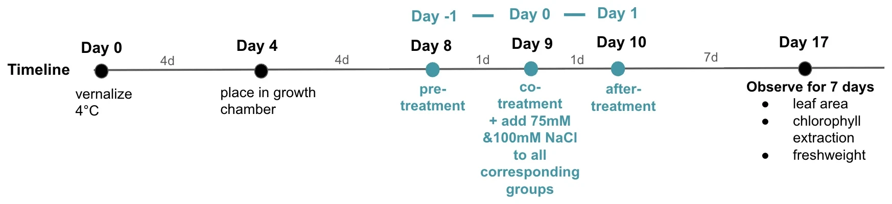
On the technical side, we applied the protectant directly onto the surface of the agar by adding 3 mL then removing 2 mL of excess to achieve 1 mL of final protectant added (the surface tension of the agar causes uneven distribution of protectant, therefore we added a larger volume of protectant to completely submerge the surface first, then suck out the excess protectant last). Furthermore, to prevent varying factors of growth between groups with and without protectants added (as liquids can affect plants’ absorption and growth), we added the equal volume of sterile water (1 mL) to every other group to simulate equal liquid effects on plants.
Phase 3 · Bioreactor-produced protectants + NaCl
Secreted by our engineered B. subtilis, ACC deaminase, LEA14 and BoPEP4 were used as the protectant against salinity stress in Phase 3. Before applying, the protectant was filtered through a 0.22 µm filter. The main difference in this phase’s protectant application is that we utilized a spraying method. We used a sterilized spraying nozzle to dispense 3 sprays of ACCD onto the surface of plants, administered by spraying in 3 equal areas of individual sections (one top left, one top right, and one bottom) through a distance of 10 cm between the nozzle and agar plate.
The overall experimental flow still follows the timeline from phase 2 of CH Bio peptide testing, while we extended the germination time from 4 days to 7 days (this suggestion was provided by Prof. Cheng to use stronger plants for stress testing).

Heat stress · phase 1 · CH Bio peptide at 37 °C
At the beginning of the experiment we did not use a heat shock, because a sudden shock is not what a field sees. Instead we thermo-primed for 3 days at 37 °C, which stands in for the slow change of temperature over a day. Vertical plates cannot hold as much liquid protectant on the surface as horizontal plates can, so we sprayed: a nozzle that dispenses 0.536 mL for every 3 sprays, which keeps the dose each plant receives standardized across plant trials. The three sprays go one up, one left and one right, all above the line the root tips sit on; more than three, and the weight carries the protectant down the plate.
Heat stress · phase 2 · ACC deaminase at 37 °C
Protectants usually go in through the roots, but ACC deaminase is a large enzyme and is taken up through roots with difficulty. With the vertical plates again unable to hold liquid, we sprayed three times for a total of 0.536 mL. Contamination obstructed the data collection in the first trial, so we moved the clean seedlings onto new plates and carried on with the same method; mold still grew extensively on the finished plates. Our instructors suggested an unsterilized spray nozzle, so for the last heat trial we cleaned the nozzles by spraying sterilized water, then 75% ethanol, then sterilized water again.
![The hydroponic box workflow drawn as one sheet. Down the left, preparation: box and board, seed holders, seed-holder agar, medium, and planting Arabidopsis seeds in the holders. On the right, salinity and protectant treatment in two phases. Phase 1, NaCl with CH Bio peptide: 4-day-old seedlings into 300 millilitres of 0.1 times MS medium, 10 days old, then 600 microlitres of CH Bio peptide and 290 millilitres of medium with 10 millilitres of 3 molar NaCl, the peptide removed 3 days after, 7 days of observation. Phase 2 repeats this with ACC deaminase or BoPEP4 at 1/40 WB800, 1/40, 1/60, 1/80 and 1/100. Below, the heat stress test: boxes into a 37 degree incubator, protectants added once the medium reaches 37 degrees, three days of observation, then the protectant removed, the plants moved to fresh medium and a 22 degree incubator for 7 days of observation.](../assets/img/plant/ov-hydro-boxes.webp)
![The hydroponic rack workflow drawn as one sheet. The same preparation down the left. On the right, salinity and protectant treatment on racks: 2.1 millilitres of 0.1 times MS medium a well at 7 days old, changed to 1.9 millilitres at 10 days old, then a master mix made for each treatment from WB800, 0.1 times MS medium, ACC deaminase or BoPEP4, and PLP at 1/100 for ACC deaminase only. Each labelled rack takes 2.1 millilitres of its master mix and 0.07 millilitres of 3 molar NaCl, the plants go back to the rack, and 7 days of observation follow. Below, the heat stress test runs the same way for the ACC deaminase combinations and finishes in a 37 degree incubator with 7 days of observation.](../assets/img/plant/ov-hydro-racks.webp)
Abiotic stress, such as salinity stress and heat stress, negatively affects crop productivity. To test the effectiveness of our self-produced protectants under both types of stress, we chose to use a hydroponic system that allows for precise control of environmental factors. Compared with soil-based systems, hydroponics reduces the number of uncontrolled variables, such as differences in soil composition, microbial communities, and water distribution. Therefore, we can establish and maintain consistent experimental conditions by precisely controlling environmental parameters, including pH, electrical conductivity, temperature, and dissolved oxygen. In addition, nutrients and stress treatments can be delivered more uniformly to all plants through the nutrient solution, improving experimental consistency. Because treatments are added directly to the root environment, the hydroponic cultivation system allows us to rapidly observe plant responses to different stress conditions and evaluate the protective effects of our target protectants.
We are inspired by Matthew Gilliham’s hydroponics culture system (Conn et al., 2013) [7]. First, Arabidopsis seeds were sown on 0.6% agar containing black microcentrifuge-tube lids, each with a 3 mm diameter hole punched using a leather punch. Then, the lids containing seeds were placed on a microcentrifuge tube rack with the agar side facing down. Each well was filled with 2.1 mL of ½ MS medium, allowing the agar to remain in contact with the medium throughout stratification and germination. The seeds were stratified at 4 °C in the dark for at least 48 hours, and then transferred to a growth chamber maintained at 22 °C under a 16-hour light/8-hour dark photoperiod. After germination, 4-day-old seedlings were directly transferred onto the floating board or holder and left to grow in the hydroponic box. The tank was kept dark to reduce algal growth and continuously aerated with air stones to maintain sufficient dissolved oxygen. The nutrient solution was regularly replaced every 2–3 days, and the plants were then used for experimental treatments and physiological measurements.
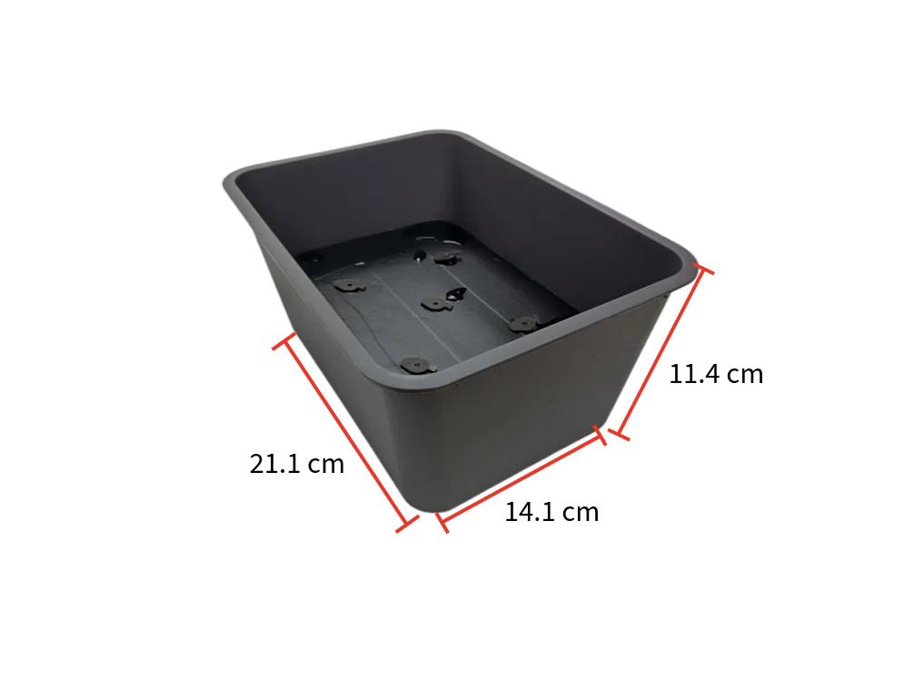
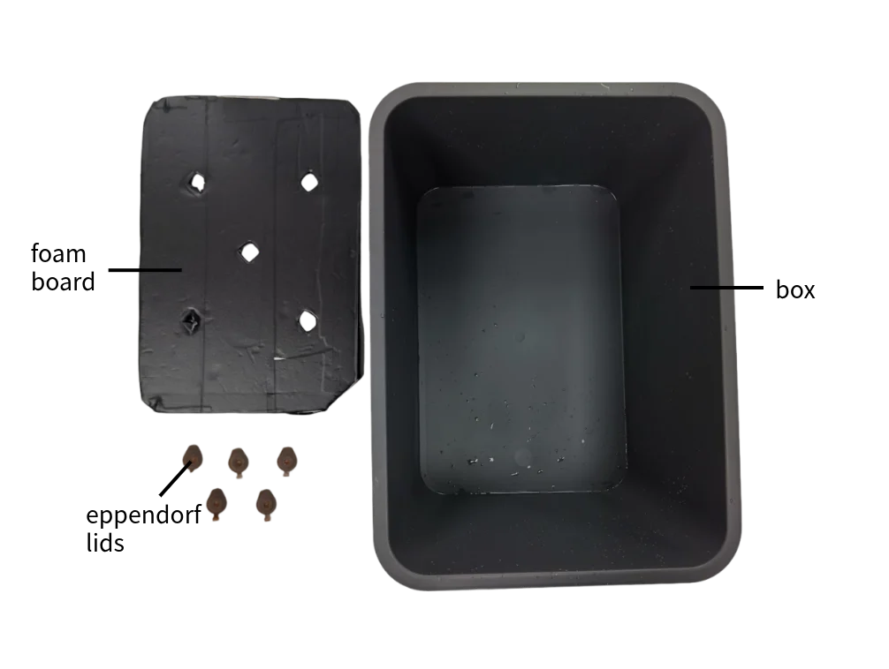
This is our first design of a hydroponics box. We chose a larger box in the beginning, with five agar-containing seed holders, and the tank can be filled with about 500 mL of ½ MS medium. This design wasn't ideal because the foam board had more space to accommodate more seed holders, but we only used five. In addition, the texture of the board is too fragile to be reused; it is cut from the foam and then taped with black tape. These processes are more time-consuming and difficult to scale up for mass production. Furthermore, the depth of the box made it difficult to observe the root system. The black box also made it difficult to monitor the medium when it became turbid.
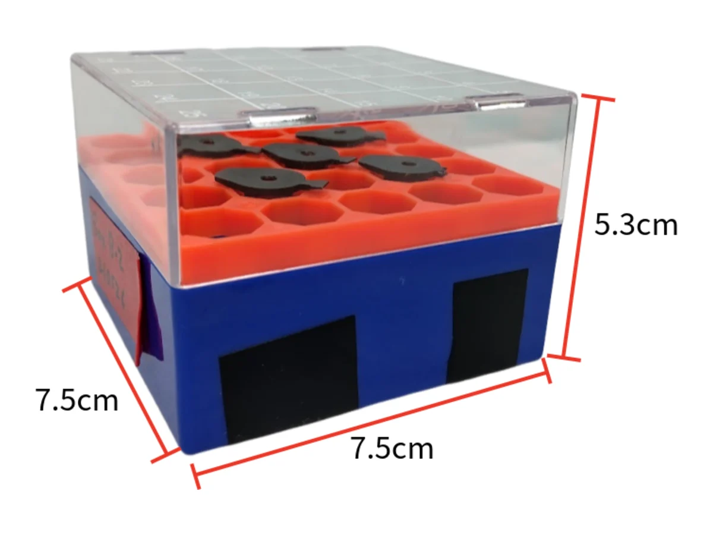
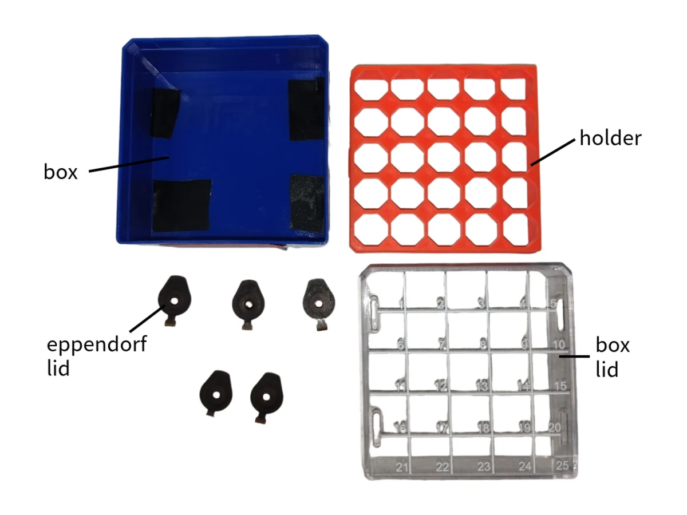
Therefore, for the second version of the hydroponic box we chose a much smaller box than the previous one. We found this box on the internet and thought this may be a good hydroponic box. This box has holders for the lids and labels on the box lid. However, the medium easily leaks from two sites when we try to move the box. One is the joint, and the other is the bottom. Even when we tried to cover the hole with black tape to prevent leakage from the bottom, it was not sufficient to avoid the leak. Another problem is the lid easily falls into the box if we don’t place it at a specific angle.
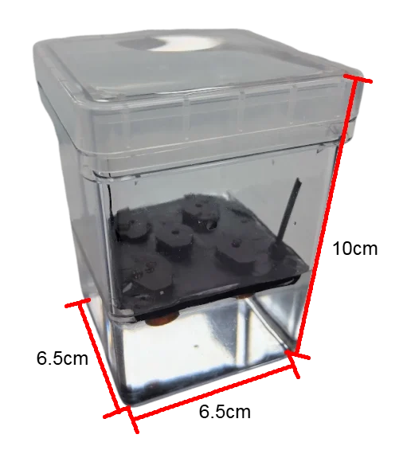
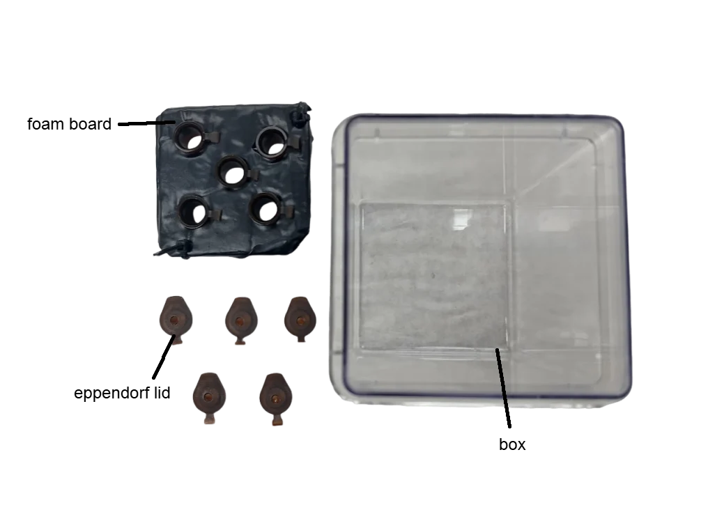
So we kept adjusting the design and developed the third version of the hydroponic box. Due to our previous experience, we discovered the importance of the box being opaque and deep enough to provide sufficient space for Arabidopsis root development. However, when we tried to fix two main problems from the previous prototypes, prototype 1 not easily showing the turbidity of the medium and the leakage of the medium in prototype 2, we encountered some new issues. First, the foam board was too tightly fitted with the box and difficult to reach when we tried to change the medium. Additionally, the box is too narrow for the plants to grow and limits the number of plants we can grow in each box.
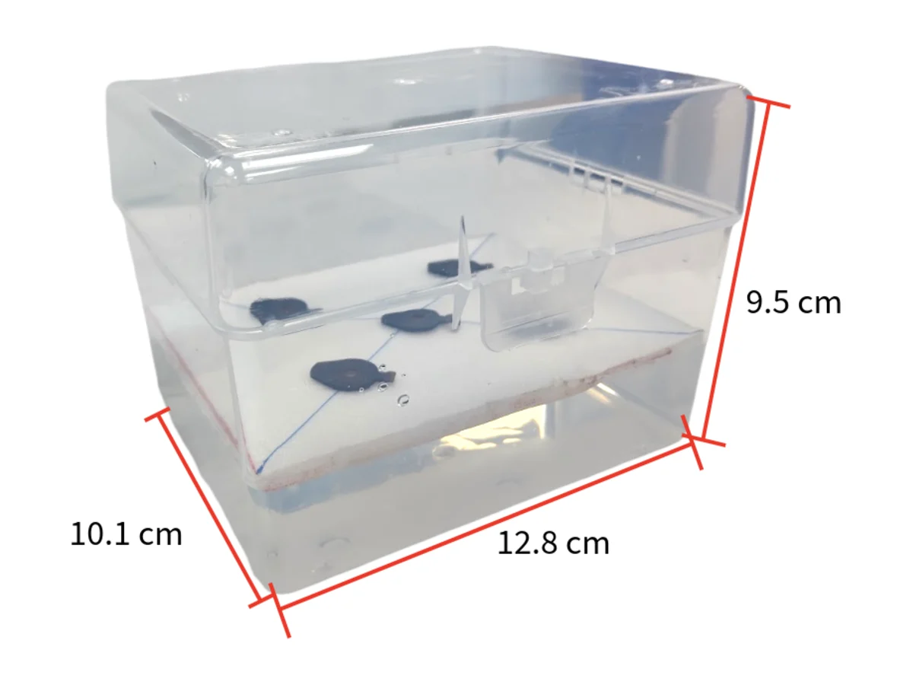
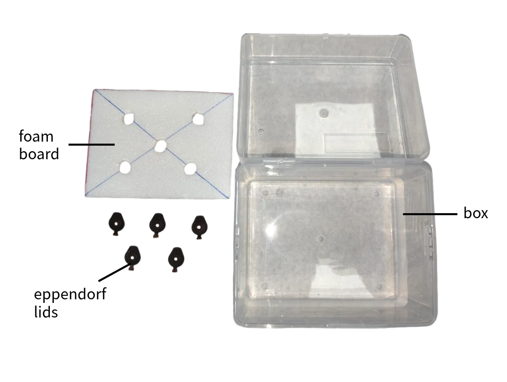
After several rounds of trial and error, we moved to the box shape we kept. We realized a medium-sized box would be ideal because it doesn't occupy too much space. It also allows us to easily observe the medium turbidity and root system, so we chose a 1000 µL tip box. The advantage of using a tip box is that it is suitable to reuse. We can reuse it multiple times after cleaning and autoclaving. Its size is enough to plant the amount of plants we want and it is transparent for us to observe the root system. We can punch at least 5 to 13 holes in one board. The contamination of this box is also less often than the previous two that we tested.
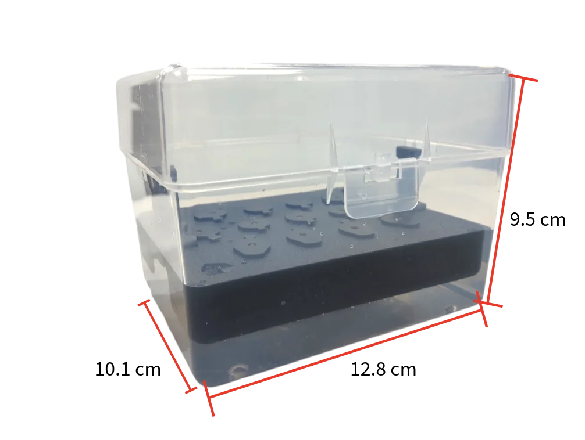
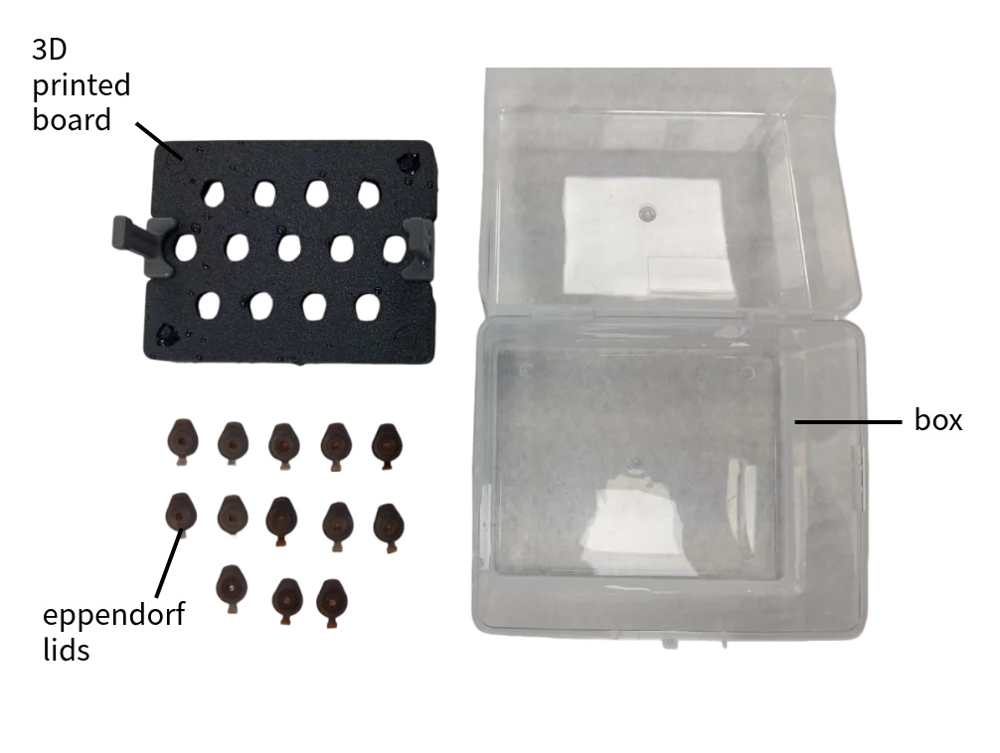
This is our improved hydroponic box prototype, version 4.1. We replaced the foam board with a 3D-printed board and added a carrying handle on each side. This carrying handle makes it easier for us to change the hydroponic medium. The reason why we changed it is because the foam board is really fragile and easy to break. The foam board became softened after it stayed in the water for a long time. To make the quality of the hydroponic system more consistent, we decided to use a 3D printed board, so that it is far simpler to maintain the shape of the board and prevent broken boards in the middle of changing medium.
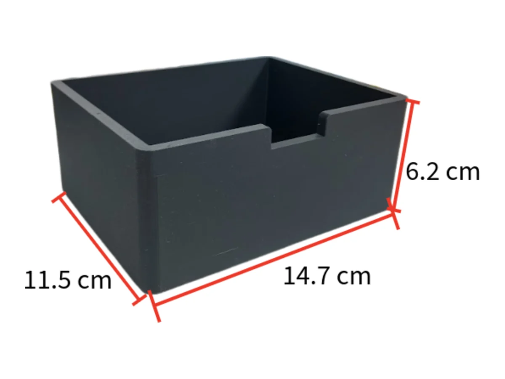
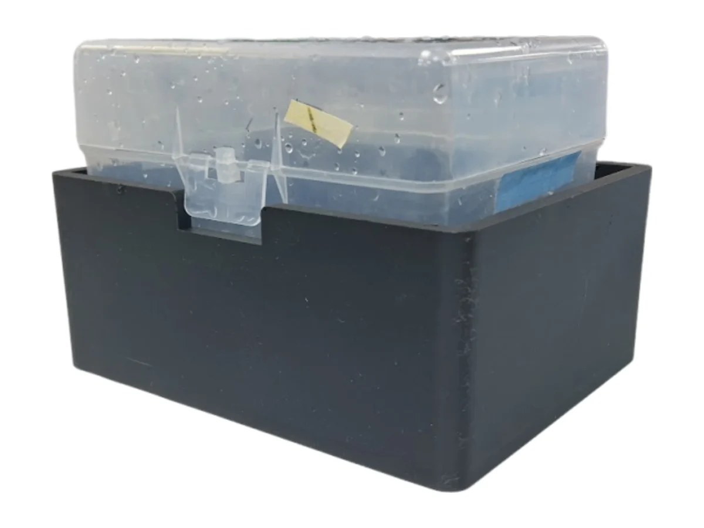
The final hydroponic setup consisted of a version 4.1 tip box equipped with a black 3D-printed floating plate, placed inside a light-blocking enclosure measuring 14.7 × 11.5 × 6.2 cm. The outer enclosure minimized light exposure to reduce algal growth, while a side notch allowed the clear inner reservoir to be easily removed for observation of the root system.
To evaluate whether our protectants could reduce abiotic stress in plants, we developed multiple experimental platforms, not only agar systems. We needed a platform in which stress could be easily applied for different durations and the concentration of protectants could be precisely controlled. As a result, we can measure the fresh weight or root length of these treated plants, providing simple and accessible ways to quantify the results. In the beginning, we reviewed related papers to figure out how they established stress protocols on Arabidopsis. Here we focused on heat and salinity stress.
Salinity stress
First, we followed Cortés-Jiménez et al. [11]. This experiment tested six NaCl concentrations, 0, 50, 100, 150, 200 and 250 mM, rescued by Azospirillum brasilense, the most studied plant growth promoting bacteria (PGPB). According to the results, plant stems under 0–100 mM NaCl did better than under 150–250 mM, and best at 50 and 100 mM NaCl. This means that these two salinity concentrations are moderate enough for the plant to be rescued by the bacteria. According to the pretests from agar, Arabidopsis applied with 100 mM NaCl expresses a strong stress response but doesn’t die at this threshold and could be rescued. Therefore, we decided to test 100 mM NaCl in our salinity test. Next, we decided to use CH Bio peptide to evaluate the stress response of plants under 100 mM NaCl. We used CH Bio peptide since it is a commercial product that helps plants resist abiotic stress.
Heat stress
One of our main reference papers on heat stress is Auverlot et al. [4], which describes how the different stages of a plant may have different heat tolerance. This helped us make a quick decision about which developmental stage is most suitable for each condition, and also about the growth medium composition, the timing of stress application, and the days of recovery time. This information was particularly important for us because this was our first time cultivating Arabidopsis in the hydroponic platform and also with the heat treatment. For salinity experiments, we therefore designed the system around three variables: plant developmental stage → timing of protectant application → timing and intensity of stress. Overall, integrating all the information will help us accelerate our experiments and increase the success of protectant testing in the hydroponic system.

Soil trials were done to simulate real field conditions and allow protectants to be validated under complex conditions after testing in controlled environments such as agar and hydroponics. Soil introduces physical matrix interactions, including water retention and pore size distribution, which affect how the NaCl and protectant diffuse and reach the plant roots. Additionally, soil contains native microbial flora, allowing us to validate its real world viability. Hydroponics and agar assays are for baseline fine tuning, protocol simulations, and controlled proof of concept, while demonstrating efficacy in real soil reflects smallholder farming realities.
Transferring 7-day-old Arabidopsis from vertical agar plates to soil pots.
ProblemDuring the transfer process, plant roots are easily damaged and stressed, which led to inconsistent growth of plants.
Seeds stratified in sterile water for 3 days, then sown individually in the soil pots, 4 per pot.
ProblemThe n value was too small, and plant growth was not consistent enough to have enough sets to collect measurable data.
Seeds stratified in 1 mL of sterile water for 3 days and dispersed using a micropipette; smaller plants are picked out at later growth stages to keep plants a similar size in each experimental group.
KeptSuggested by Prof. Cheng.
Arabidopsis runs through its life in six to eight weeks, in four stages: germination and seedling establishment, stages 0.1 to 0.7, days 0 to 7; rosette growth, stages 1.0 to 1.12, weeks 2 to 4; floral transition and bolting, stages 5.0 to 6.5, weeks 4 to 5; and reproductive senescence, stages 8.0 to 9.0, from week 6 [1]. Our first salinity assays used 1-month-old plants, at the late rosette to early bolting junction. There the plant is already moving its resources towards floral meristem development instead of ordinary vegetative upkeep [18], and the lower leaves begin to senesce, which puts baseline variation into the assay and makes the difference between a stressed and an unstressed plant harder to read. Following Prof. Cheng’s advice we moved the testing window to 2-week-old plants, stages 1.02 to 1.04: active vegetative growth, with no floral transition or senescence in the way.
First used 1-month-old plants.
ProblemThe plant is already close to the end of its life cycle.
Then used 2-week-old plants, following Prof. Cheng’s suggestions.
Salt behaves differently in soil platforms compared to the agar trials. The first attempt built up 25 mM per day toward 100 mM, a gradual ramp proposed by Dr. Verslues [8]. Prof. Cheng's assessment, recorded on 2 September, pointed out that for a month-old plant the accumulation method is too mild, and worse, watering between doses washes the salt back out instead of letting it accumulate.
The revised schedule pours equal volumes of 100, then 200, then 300 mM, with no watering in between, and then keeps repeating 300 mM until the effect is visible [9]. It has no fixed end date; the plants decide when it stops. A pot takes 30 to 50 mL before a little runs out of the bottom, which is how we know it reached the roots, and the tray under it wants to be 1 to 2 cm deep so it can hold 200 to 400 mL at a time.
We tested three application timings of ACCD protectant, including pre-treatment, co-treatment, and post-treatment, under the NaCl wash of 100 mM, 200 mM, until reaching a final concentration of 300 mM NaCl.
To test what ACC deaminase does for a plant under heat, we took the thermo-priming frame of our agar work into soil, building on Auverlot et al. [4]. On agar, 10-day-old seedlings went to 37 °C for 5 days to induce acquired thermotolerance, then recovered for 5 days at 22 °C, and we scored survival, fresh weight, chlorophyll retention and anthocyanin accumulation. Soil-grown plants needed both the incubation and the treatment schedule adapted: two-week-old plants go into a 37 °C incubator for 5 days of heat stress, then recover for 5 days in the growth chamber at 22 to 25 °C.
In a field, high salinity and extreme heat do not arrive on a schedule; they come as fluctuating events. Testing the same three timings here, pre-, co- and post-treatment, is how we ask at which phase of a stress a farmer could still reach for a microbial inoculant and get something back.
Sets 1 to 11 are the salinity-stress experiments, grouped below by the protectant each one tested. The heat-stress run sits at the end of the strip.
Conducting preliminary testing using solely trehalose protectant helped us quantify growth capacity when protectant is added. Each plate still had all 8–9 of their seedlings germinated, so we decided to fine tune the optimal trehalose concentration for rescue effectiveness evaluation. With experimental set 3, we tested out 4 different trehalose dosages, including 0.125 mM, 0.25 mM and 0.5 mM, all under 100 mM NaCl. Experimental groups 1 and 2 revealed that 1 mM was too toxic and 0.5 mM was insufficient against strong salt levels, so we considered manipulating the concentration in between the two to reach a balance. As a pre-test, we were able to identify the early effects of salinity stress on Arabidopsis and key milestones that can be observed, such as stunted root growth or minimized leaf area. Since our protocol was not yet standardized at the time, data collected from early experimental sets only include image documentation (done in a light box with both a black and white background and surrounding lights turned off).
On those observations we moved to standardized experiments that carry quantitative measurements of primary root length, fresh weight and chlorophyll content.
| Set | Dates (from the incubator) | Duration | Purpose | Protectant | NaCl | Protectant concentrations |
|---|---|---|---|---|---|---|
| #1 | 20260510 → 20260523 | 14 days | Pretest: 1. practice and familiarize with planting Arabidopsis in agar plates and overall protocol 2. fine tuning salinity concentrations | Trehalose | 50 mM and 100 mM | 1 mM |
| #2 | 20260520 → 20260604 | 16 days | Pretest: 1. practice and familiarize with planting Arabidopsis in agar plates and overall protocol 2. fine tuning salinity concentrations 3. 1 mM trehalose too toxic | Trehalose | 100 mM and 150 mM | 0.5 mM |
| #3 trial 1 | 20260527 → 20260607 | 10 days | Pretest: 1. fine tuning lower trehalose concentrations against standardized 100 mM NaCl (best performed) 2. the 1 and 0.5 mM trehalose has some levels of inhibitory effects on plant growth | Trehalose | 100 mM | 0.125, 0.25, 0.5 mM |
| #3 trial 2 | 20260529 → 20260611 | 13 days | Pretest: simultaneous trials within experiment set 3 to increase sample size | Trehalose | 100 mM | 0.125, 0.25, 0.5 mM |
Table 1: Overview and further elaboration on pretest experimental sets, including experimental sets 1–3
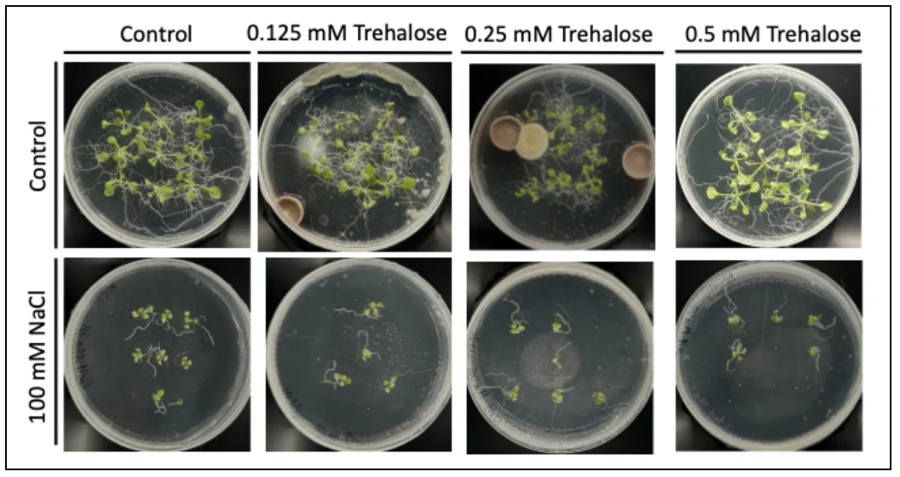
After sufficient hands-on experience in protocol design and standardizing the structure of our setups, we began official trehalose experiments from experimental set #4 to #6. Each set varies by the NaCl and trehalose concentration combinations, driven by different purposes in evaluation, where we place plants in low to high stress levels to evaluate the protectants’ effectiveness in response.
| Set | Dates (from the incubator) | Duration | Purpose | Protectant | NaCl | Protectant concentrations |
|---|---|---|---|---|---|---|
| #4 | 20260618 → 20260630 (stratified 2 days) | 12 days | Main experiment: fine tuning trehalose dosage higher to 1.0 mM, evaluating the effectiveness of higher trehalose concentration against standardized 100 mM NaCl. Changes: sucrose 3% → 1% to prevent dehydration; after meetings with Dr. Peng, switch from horizontal to vertical planting to better observe gravitropic root growth and enable ImageJ analysis; ½ MS agar plate → 50 mL (with 1% sucrose, MES buffer and 1% agar); plant stage 4-day-old seedlings; readouts root length, fresh weight, chlorophyll content | Trehalose | 100 mM | 0.25, 0.5, 1.0 mM |
| #5 trials 1 and 2 | 20260704 → 20260712 | 18 days | Main experiment: testing with significantly higher NaCl stress levels and trehalose dosage, a higher concentration gradient to evaluate trehalose effectiveness in different scenarios. Changes: stratification from 2 → 4 days; more diverse data for dry lab modeling | Trehalose | 0, 150, 250 mM | 1, 5, 10 mM |
| #6 | 20260729 → 20260803 | 6 days | Main experiment: 1. testing with smaller intervals of NaCl concentration without exceeding 150 mM (250 mM NaCl was excessively inhibitory in set #5) 2. testing the specific 5 mM trehalose dose (best rescue in set #5) | Trehalose | 75, 100, 150 mM | 5 mM |
Table 2: Overview and further elaboration on experimental sets 4–6
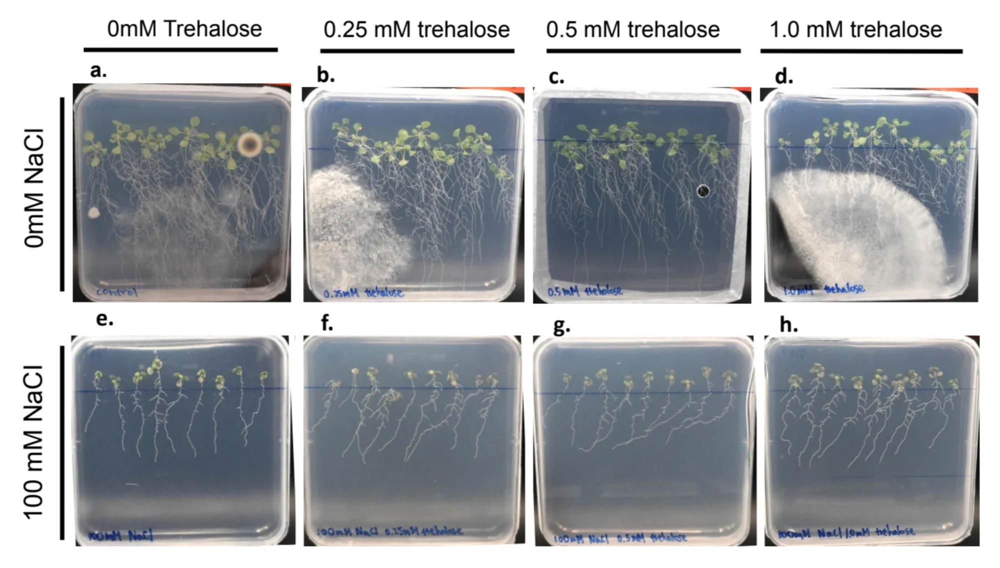
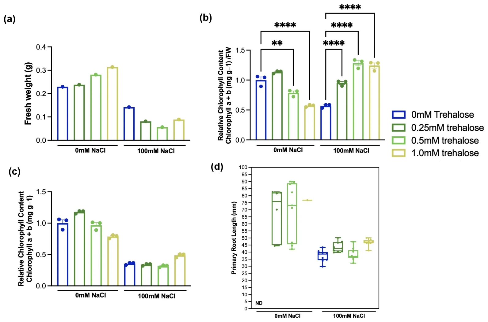
This set maintains similar testing conditions to set 3, utilizing 100 mM NaCl as the standardized stress level, while evaluating a slightly higher range of trehalose doses (0.25, 0.5 and 1.0 mM compared to 0.125, 0.25 and 0.5 mM in set 3). It aimed to assess the rescue efficacy of higher trehalose concentration against fixed 100 mM NaCl salt stress, and to allow direct comparison with the lower doses from the previous set. We introduced major changes in the experimental set-up: the cultivation platform shifted from horizontal to vertical planting, to better observe gravitropic root growth and to facilitate precise root quantification using ImageJ software; the overall growth timeline was adjusted to 2 days stratification at 4 °C, then 4 days growth, then transfer of the 4-day-old seedlings onto newly made salinity plates. 3 major primary parameters were evaluated to quantify overall growth: root length, fresh weight, and chlorophyll content.
Exposure to 100 mM NaCl substantially reduced seedling fresh weight across treatment groups. Supplementation with 0.25 and 0.5 mM trehalose reduced fresh weight further, relative to the untreated salt-stressed control, while 1.0 mM trehalose produced a slight recovery. Even there, fresh weight stayed below the untreated salt-stressed control, so trehalose did not restore biomass accumulation under these conditions. Without salt, trehalose supplementation went with an increase in fresh weight.
Salt-stressed seedlings had substantially reduced fresh weight, and normalizing chlorophyll content by fresh weight gives some of those groups disproportionately high values; our reading therefore follows the chlorophyll content without fresh-weight normalization. Under 100 mM NaCl stress, 1.0 mM trehalose significantly increased total chlorophyll content compared with the untreated salt-stressed control (p < 0.05). The 0.25 and 0.5 mM doses showed no comparable improvement, which puts the protective response on the trehalose concentration.
Primary root length showed greater elongation in trehalose-treated seedlings than in the untreated salt-stressed control, the longest roots at 1.0 mM trehalose. The plates suggest more lateral root development and larger leaf areas in the seedlings receiving 1.0 mM trehalose under salt stress. Taken together, 1.0 mM trehalose improved some indicators of plant growth under 100 mM NaCl stress, chlorophyll content and root development above all, while the improvement in fresh weight was limited.
Summary
While conducting experimental set 5, we realized around 2–3 days in that some of the plants had turned white due to chlorosis, which accelerated the breakdown of chlorophyll, leading to a relatively lower chlorophyll content; more severe chlorosis causes total depletion of the pigment in plant leaves. Even in cases where 5 mM and 10 mM of trehalose were used, all of the plates had at least one seedling that had shriveled up and turned white. We decided to redo the experiment in trial 2 with slight changes to our aseptic technique. The control groups without trehalose could reach up to 82.476 mm in root length, yet the 150 mM groups were limited at around 4–5 mm and the 250 mM groups stunted within 1 mm.
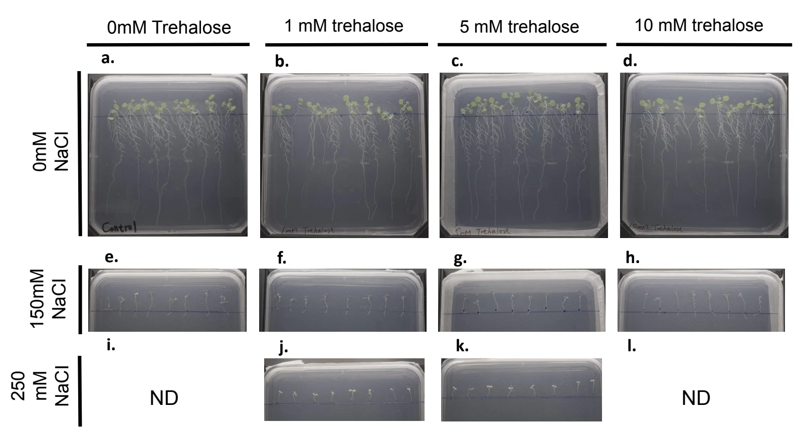
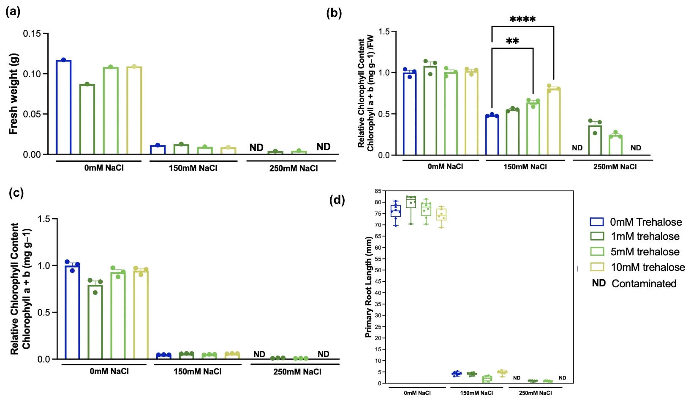
Under the no-stress 0 mM NaCl environment, the chlorophyll content of each group remained stable across different trehalose dosages, indicating the plants do not exhibit exogenous protectant-driven growth boosts when not subjected to stress, and also revealing that exogenous trehalose does not impose metabolic toxicity.
In contrast, under severe salinity stress (150 mM NaCl), chlorophyll content exhibited a significant dose-dependent recovery. Specifically, treatments with 5 mM (p<0.01) and 10 mM (p<0.0001) trehalose yielded statistically significant improvements relative to the untreated stressed control, effectively mitigating salt-induced chlorophyll pigment degradation. This upward trend highlights trehalose’s consistent protective efficacy and proportional correlation in rescuing, shown from the effectiveness of increasing trehalose dose against a high salinity stress.
While 150 mM NaCl serves as an optimal severity level for assessing high trehalose dose rescue, 250 mM NaCl is revealed to be too toxic for the seedlings to sustain, exceeding the physiological tolerance of the seedlings, resulting in severe damage such as physiological chlorosis, stunted root growth, and loss of chlorophyll pigments. Specifically, the seedlings obtained little to no primary root length growth, within a 1 mm range. Furthermore, based on the visuals, the seedling groups (5 mM, 10 mM trehalose) are extensively damaged with severe chlorosis on each of the leaves, and might soon die or only be sustaining their lives based on the nutrients provided by the ½ MS agar.
Summary
The previous set demonstrated that extreme salt stress such as 250 mM NaCl was too severe for the plants to sustain, so we eliminated the highest NaCl concentration and chose smaller intervals under 150 mM for this set. However, plant images revealed a protectant concentration of 5 mM was not sufficient for 150 mM of NaCl because the leaves of the 100 mM NaCl trials turned purple/brown after 3 days of treatment. Overall we selected 3 testing NaCl concentrations with a relatively smaller interval, which are 75, 100, and 150 mM NaCl.
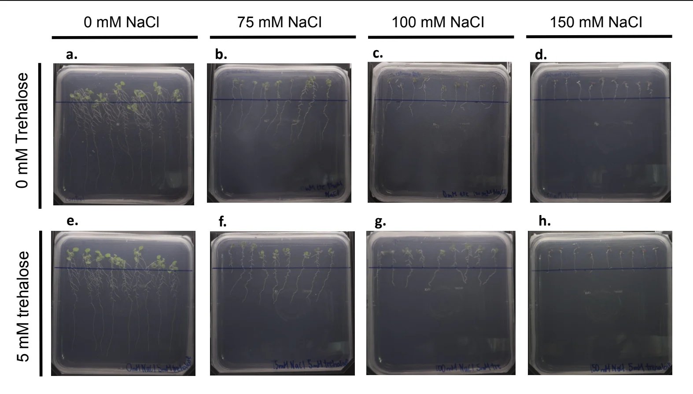
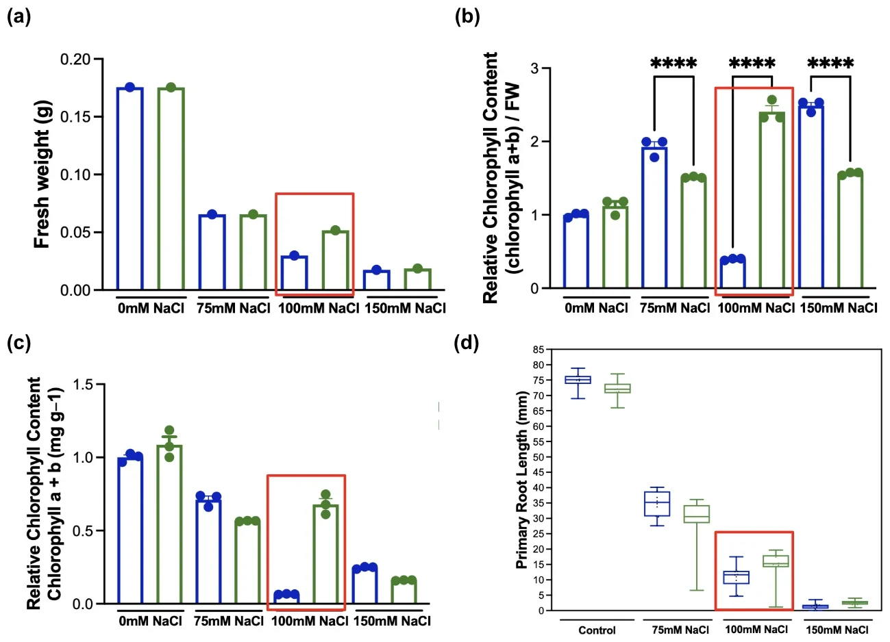
The application of 5 mM trehalose significantly enhanced plant salt tolerance under 100 mM NaCl stress. This is evidenced by an approximate 8.7 times increase in chlorophyll content and a substantial 3 cm increase in root length relative to the untreated control (all highlighted with red outlines). The statistical significance, **** p<0.0001, further validates the result. Crucially, each analysis conducted shows correlation between growth parameters and physiological performance, as also reflected in the plates: the 5 mM trehalose-treated group consistently exhibited superior growth parameters compared to the untreated stressed group.
Regarding the control groups, baseline chlorophyll levels remain comparable between the control and the 5 mM trehalose group, while there is a minor decrease in root length growth of the 5 mM trehalose group, indicating that the protectant alone has a negligible effect on non-stressed plants. Once salinity reaches 150 mM NaCl, the high stress concentration severely damaged the plants, as evidenced by physically observed chlorosis and significantly stunted growth shown by data analysis, where 5 mM trehalose did not play much role in rescuing the plants, only demonstrating a minor, within 1 cm, increase in root length, and nonetheless showing a decrease in chlorophyll content, indicating its insufficient dose.
Contrary to our initial hypothesis, the application of 5 mM trehalose did not result in a protective effect under mild salt stress, 75 mM NaCl, relative to the untreated stress control; instead, the trehalose-treated group exhibited reduced chlorophyll content. We originally anticipated that the 5 mM trehalose dose would work more effectively under a lower stress level of 75 mM, but instead, the trehalose supplementation only proved effective under 100 mM NaCl, a higher salt threshold. This outcome suggests that 75 mM NaCl is a mild salt stress, where the plants’ endogenous regulatory systems are still sufficient to maintain homeostasis without exogenous protectants. In contrast, 100 mM NaCl likely exceeds the threshold of plant tolerance, hence triggering necessary protective mechanisms, and more effectively utilized exogenous trehalose to mitigate the cellular damage. Thereby the 100 mM NaCl groups treated with 5 mM trehalose sustained significantly better growth compared to their untreated control.
It is also observed that the root length of the 100 mM control was clearly much lower than that of 75 mM, barely growing even after 6–7 days of protection and NaCl treatments. The shift in physiological effects of plants from 75 mM to 100 mM NaCl reveals the relatively strong growth inhibition 100 mM NaCl poses on plants, whereas 75 mM did not stunt plant growth as much as 100 mM NaCl did.
Summary
A few of the results for the trials were inconclusive because of issues related to contamination, yet the repeated trials revealed the difference between earlier and later addition times of protectants.
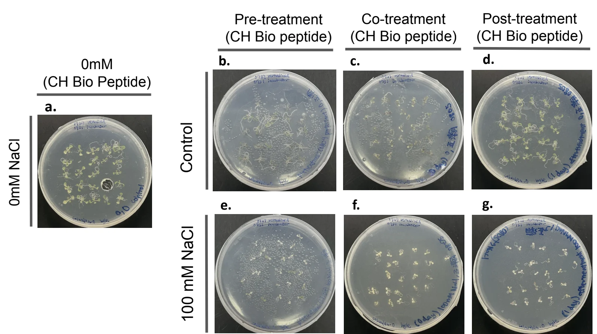
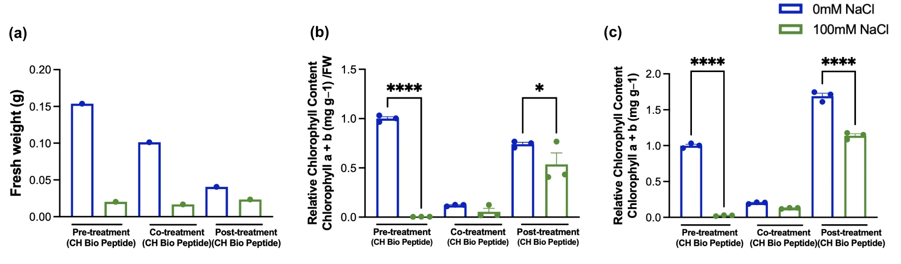
Summary
This set evaluates the rescue efficacy of CH Bio’s commercial protectant and establishes the handling it needs: top drenching on circular horizontal plates, with treatment at three timings around the stress.
Chlorophyll content reads in two subsets, the non-stressed plants and the plants exposed to 100 mM NaCl. Among the non-stressed plants, pre-treatment and post-treatment with the CH Bio peptide held significantly higher relative chlorophyll content than co-treatment, pre-treatment the highest of the three. Under 100 mM NaCl, chlorophyll content rose with later application: pre-treated and co-treated seedlings stayed severely inhibited by the salt, while post-treated seedlings held significantly more. Post-stress application is the most effective of the three timings for preserving chlorophyll under high salinity in this set, and fresh weight carries the same reading from the other side, showing what NaCl takes out of the biomass.
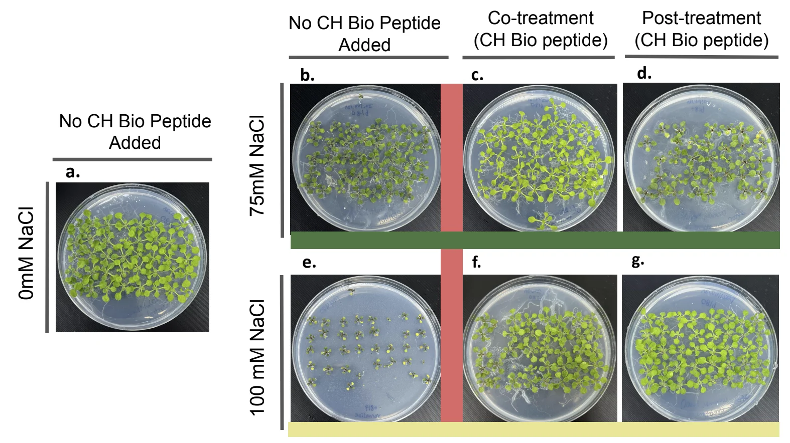
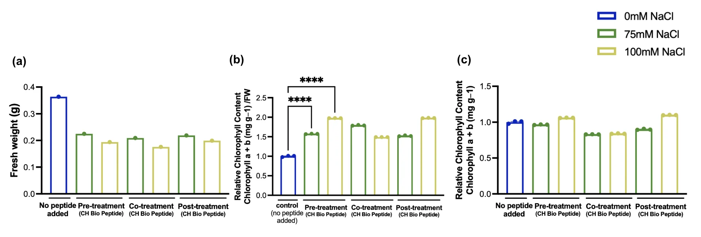
The red line follows the NaCl gradient from the control to 100 mM. Salt stress grows more severe along it, and at 75 and 100 mM growth is clearly suppressed, with severe chlorosis and anthocyanin accumulation. That is the stress induction working as intended under top drenching with 1 mL of NaCl solution.
The purple line compares co- and post-treatment inside the 75 mM group. Co-treatment with the CH Bio peptide substantially reduced the salt-induced growth inhibition against the untreated 75 mM group, with greater leaf area, longer petioles, more root elongation and little visible anthocyanin. Post-treatment at 75 mM came out close to the untreated group, so its rescue there is limited.
The blue line compares the treatments inside the 100 mM group, where co- and post-treatment both relieved the salt damage. Post-treatment recovered the most: brighter green foliage, larger leaf area, less anthocyanin, and growth close to the 0 mM mock-treated control.
Salt exposure suppressed fresh weight in every condition, and neither co- nor post-treatment with the CH Bio peptide raised total fresh weight against the mock-untreated control. The fall in relative total chlorophyll content from 0 to 100 mM NaCl in the control column carries the same progressive damage.
At 100 mM NaCl, post-treatment with the CH Bio peptide held the highest relative chlorophyll content of the four groups, above pre-treatment, co-treatment and the untreated stressed control. Post-stress application is the timing that restores chlorophyll at this salt level.
| Set | Dates (from the incubator) | Duration | Purpose | Protectant | NaCl | Protectant concentrations |
|---|---|---|---|---|---|---|
| #7 (3 repeated trials) | Trial 1: 20260801 → 20260808 | 8 days | Testing with a commercial protectant (正瀚) under different treatment times: pre-treatment (1 day before), co-treatment (day 0), post-treatment (1 day after), control. Using horizontal plates with 40 seeds per plate; lid closed while the agar solidifies, so the plant penetrates the agar | CH Bio peptide | Trial 1: 100 mM Trial 3: 75, 100 mM | 1 mL of diluted protectant to every treatment group (1/500 dilution rate) |
Table 3: Overview and further elaboration on experimental set 7
Pretesting ACC deaminase on the agar system to evaluate the application methods: 1) protectant efficacy applied in different treatment timings 2) the spraying method, under 0, 75 and 100 mM NaCl salinity stress.
Following the production of ACCD in our engineered bacteria, we began running tests directly on agar through an ACCD pretest. Data collected include fresh weight, chlorophyll content, and image documentation. The enzyme went on through a 0.22 µm filter, and contamination appeared across the plates during the run, so the readouts below are read against it.
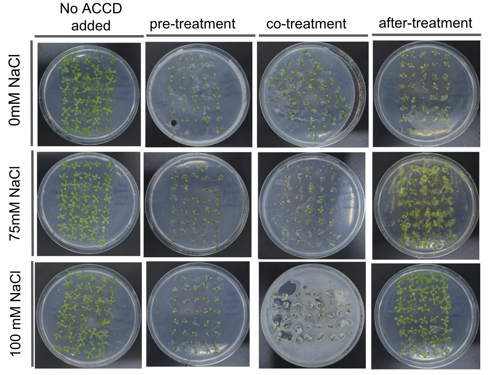
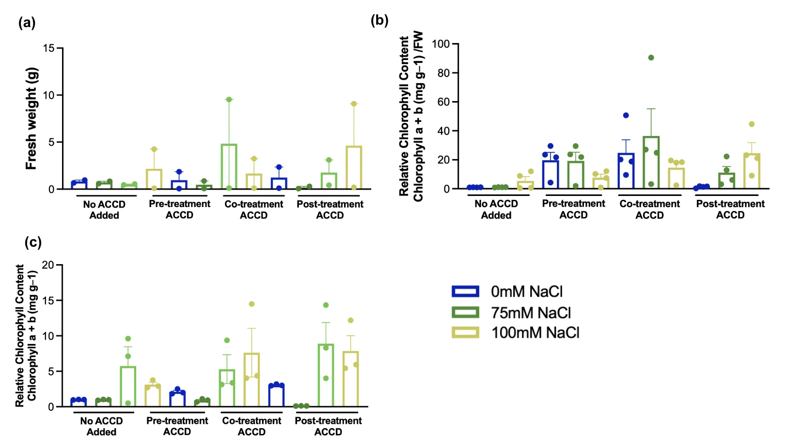
In this first test of our filtered, bioreactor-produced ACC deaminase on Arabidopsis in agar plates, all three timings show minimal rescue against the untreated group. The data are not ideal, and the protectant still looks reasonable in the post-treatment groups under salinity stress, which come out close to the salt-treated groups of the control column. On relative chlorophyll content, co-treatment averaged the highest milligrams of chlorophyll per gram of sample, which supports ACC deaminase acting as a precursor to stress mitigation. Pre-treatment holds the next highest fresh-weight-standardized chlorophyll content, with contamination present across the whole plate.
Seeds were stratified for 4 days and grown on at 22 °C for 7 days before any treatment, the longer grow-on Prof. Cheng advised. Pre-treatment went on at day 7, co-treatment with the salt a day later, post-treatment a day after that. The plates were photographed on day 8, before contamination spread across the agar, and fresh weight and chlorophyll were taken on day 13.
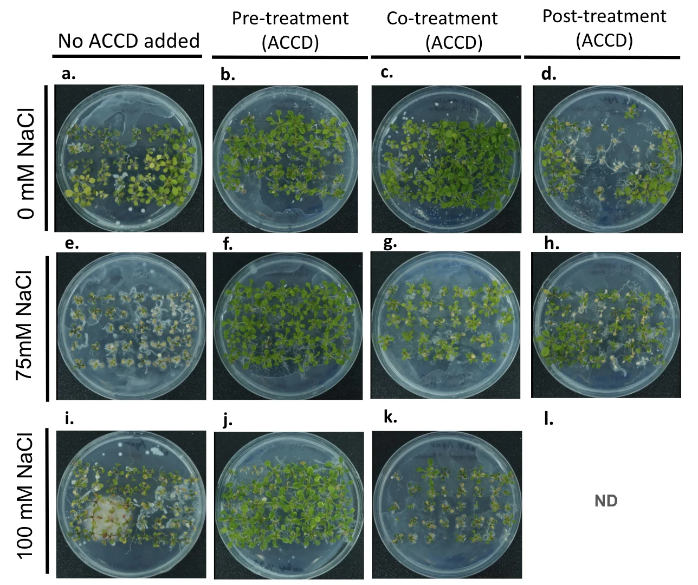
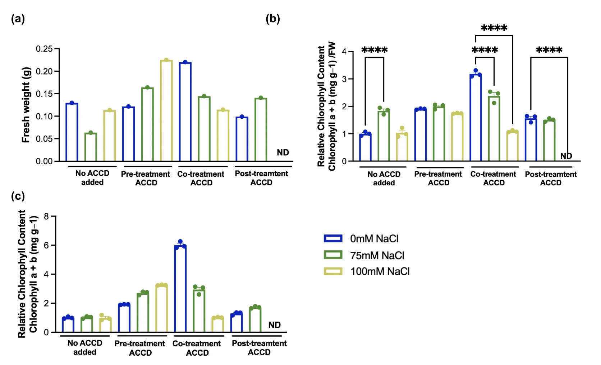
The untreated 75 and 100 mM NaCl controls carry the chlorosis the salt level implies, leaves turned part white and part yellow. Every pre-treatment group came out with visibly greater rosette area, denser foliage and more extensive petioles and roots, contamination included (b, f and j on the plates). At 100 mM NaCl a minority of the pre-treatment leaves turned yellow or white and some accumulated anthocyanin; at 75 mM the chlorosis is slight in the same way, and both groups kept most of their pigment. The co-treatment groups run the other way, more severely inhibited as the salt climbs from 0 to 100 mM (g and k), which is ACC deaminase failing to rescue a seedling when it arrives at the same time as the stress.
Fresh weight tracks the plates for the pre- and co-treatment timings. Pre-treatment rises from 0 to 100 mM NaCl, 0.122 to 0.164 to 0.225 g, which matches the denser foliage at 100 mM; priming the plant with the enzyme before the salt arrives carries a real gain in biomass. Co-treatment falls as the salt climbs, 0.220 to 0.144 to 0.114 g, back to the level of the mock control. Each condition is one plate, so the trend is a trend until it is repeated.
Summary
BoPEP4, the designed peptide our engineered B. subtilis secretes, went through the salinity design the ACC deaminase sets use: no BoPEP4 added, then pre-, co- and post-treatment, each against 0, 75 and 100 mM NaCl. The plates and the three readouts are reported below.
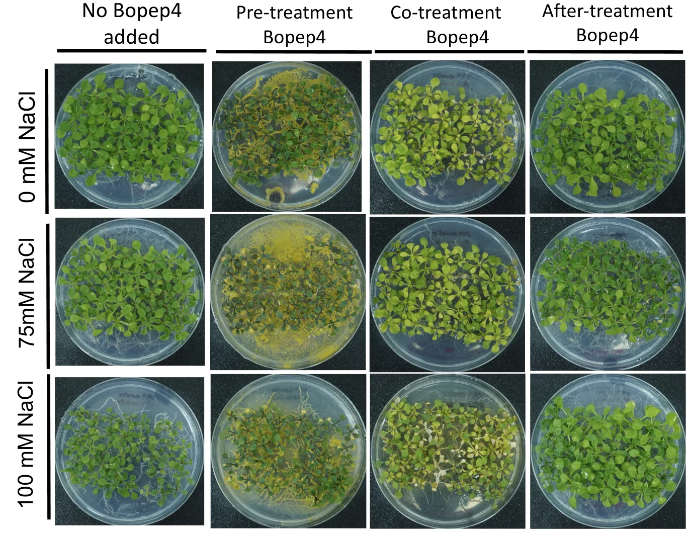
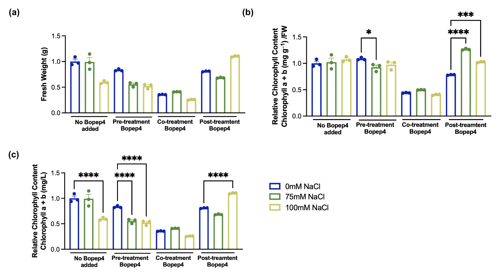
The same salinity design carried AtLEA14, against a TB medium control, with the readouts taken for the groups that came through: no AtLEA14 added, pre-treatment and post-treatment.
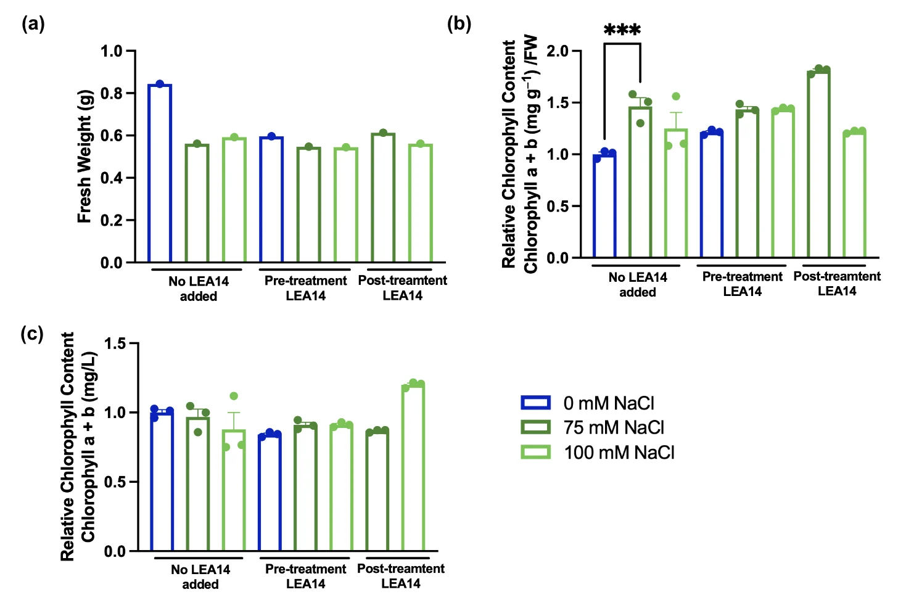
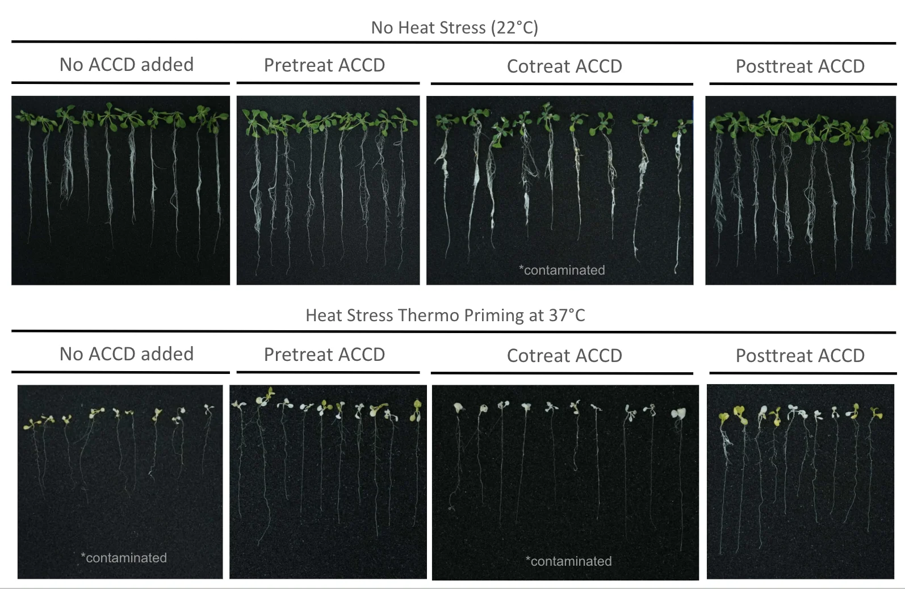
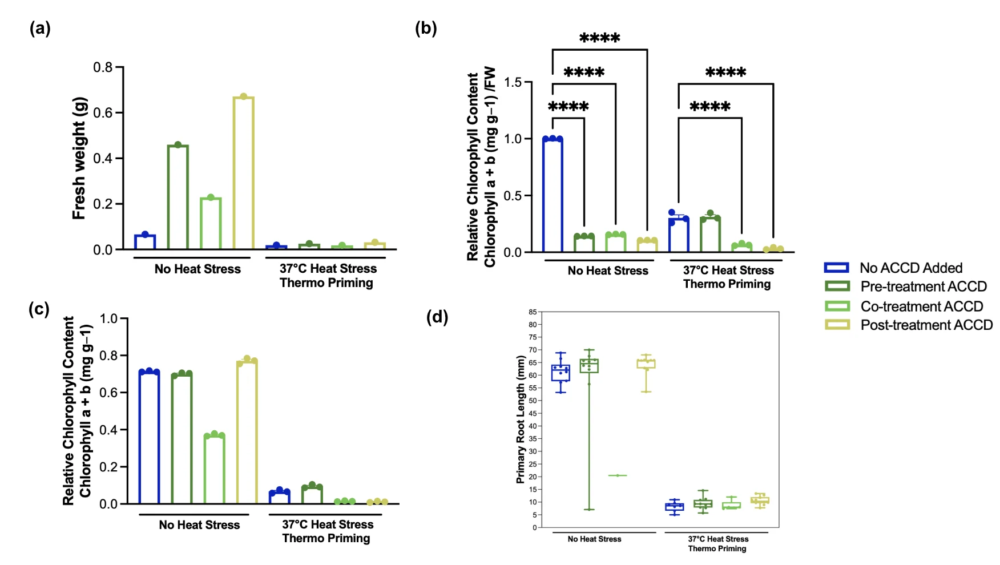
Contamination occurred in three plates, which the readouts have to be weighed against: no heat stress with co-treatment ACCD; heat stress with no ACCD added; and heat stress with co-treatment ACCD.
After 17 days the plants at 37 °C and at 22 °C differ so much in size that fresh weight under heat is roughly 95% lower, around 0.02 g a sample. Normalizing chlorophyll to a weight that small inflates it, far enough that a heat-stressed group can read higher than an unstressed control, so our reading of this set follows total chlorophyll a + b without fresh-weight normalization, calculated for the 80% acetone extracts with the equations of Arnon [23]. That measure reports the pigment in the extract, so it still carries part of the difference in biomass.
Five days at 37 °C in the incubator stands in for the prolonged heat a warming climate delivers, and the phenotype is consistent damage: primary root elongation severely stunted, rosette area much reduced, and severe chlorosis bleaching the leaves white and yellow against the untreated control. That is the heat assay doing what the Auverlot protocol [4] says it should.
Without heat, post-treatment ACC deaminase grew like the control while pre- and co-treatment cost fresh weight. Under heat, every group given the enzyme put out visibly longer roots, pre- and post-treatment the longest, while co-treatment lost survival and bleached worst. Set 9 ranks the salinity timings the same way, so across two different stressors the enzyme does least when it arrives with the stress.
On total chlorophyll without normalization, pre-treatment ACC deaminase retained the most of the four heat-stressed groups, about 13% of what the same treatment held without heat, while co- and post-treatment held almost none.
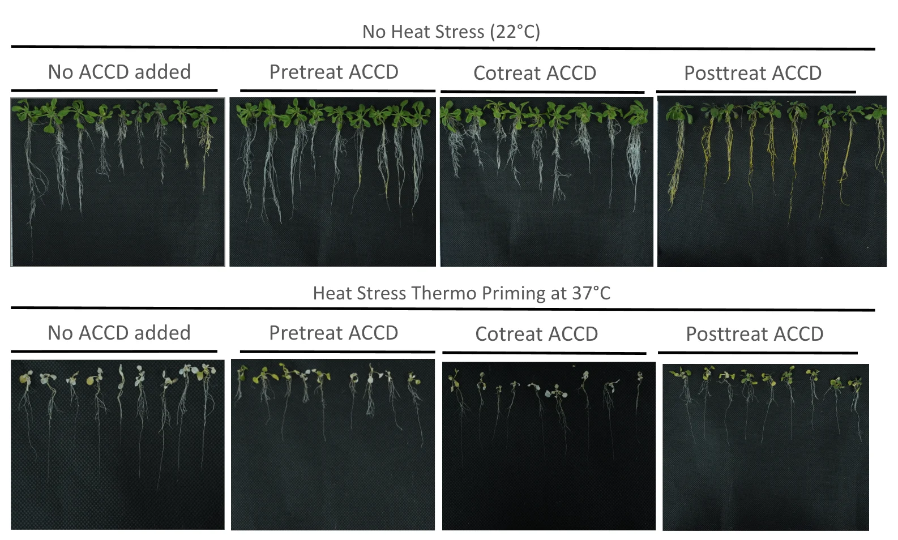
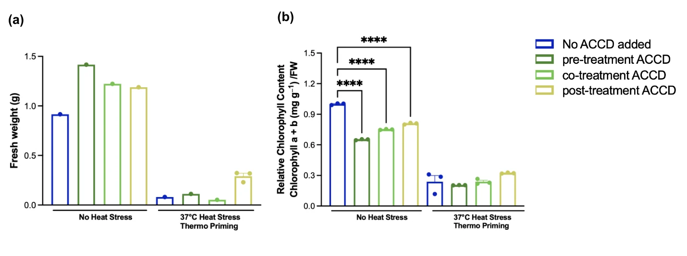
Contamination occurred in the no-heat control, the no-heat pre-treatment group and the no-heat post-treatment group, worst in the last of the three.
The second trial ran the same schedule and ranks the timings the other way, with a larger effect from ACC deaminase. The heat-stressed control went through severe chlorosis, while the post-treatment heat group kept most of its leaf tissue and its color and came out 14% above that control on standardized chlorophyll content. Pre- and co-treatment recovered less, though both held a stable chlorophyll content across nine test subjects. The readouts delivered with this trial, fresh weight and chlorophyll normalized to it, rank the heat-stressed groups the same way, post-treatment at 0.32 against 0.24 mg g−1 for the untreated heat control.
Timing therefore changes what the enzyme is worth. On standardized chlorophyll content under the same 37 °C stress, the plants given ACC deaminase after the stress and after the recovery period kept the most chlorophyll, followed by co-treatment and then pre-treatment. Ethylene production rises at two points in a heat episode, when the heat arrives and when it is taken away: out of the incubator the plant enters recovery and makes ethylene to manage cellular damage and adjust its metabolism [21], [22]. ACC deaminase cleaves ACC, the immediate precursor of ethylene, so this trial supports the enzyme lowering stress ethylene under thermo priming.
The two trials rank the timings differently and both carried contaminated plates. Under heat the ethylene account puts the demand for ACC deaminase at the point the stress lifts, while the salinity sets put it earlier, so timing is a property of the stress and the screen reads it one stress at a time.
The CH Bio peptide pre-tests ran in the hydroponic boxes. After several failures at planting in the boxes, and with the time we had left, the protectant runs moved onto the tube racks instead. Arabidopsis grows better on a rack, and shows a stress response when it is moved into a box; we do not know why.
In order to determine suitable experimental conditions, we used CH Bio peptide, a commercial protectant against drought stress, to conduct preliminary tests under both salinity and heat stress at a dilution factor of 1:500. The objective of these pre-tests was to evaluate whether this product exhibits similar protective effects under these two stress conditions.
To evaluate the salt sensitivity of Arabidopsis, 13-day-old Arabidopsis were treated with 100 mM NaCl for 7 days. Peptide treatments were also performed using three different regimens, pre-treatment, co-treatment, and post-treatment, in separate hydroponic boxes. The control group was also treated with 100 mM NaCl, but not treated with CH Bio peptide. In this test, the co-treatment group grew the best after salinity treatment. We found out that 100 mM of NaCl would cause significant stress on Arabidopsis but won’t cause death, which helped us to determine the appropriate NaCl concentration for further experiments.
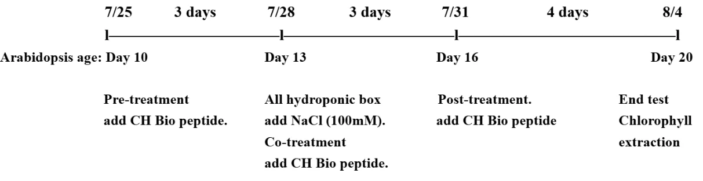
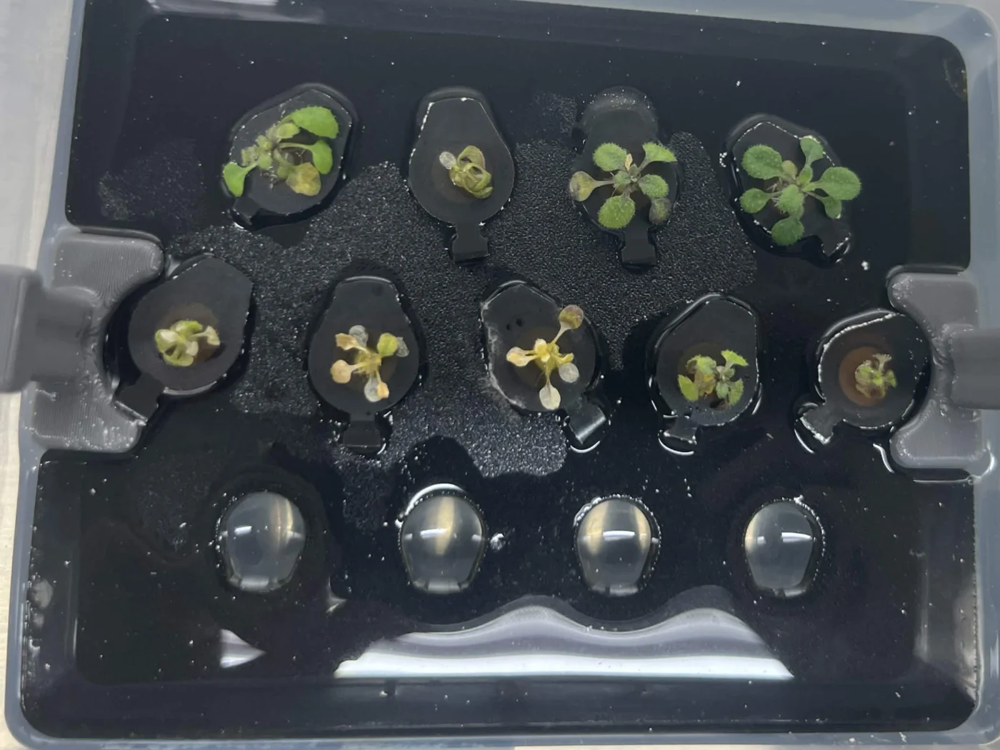
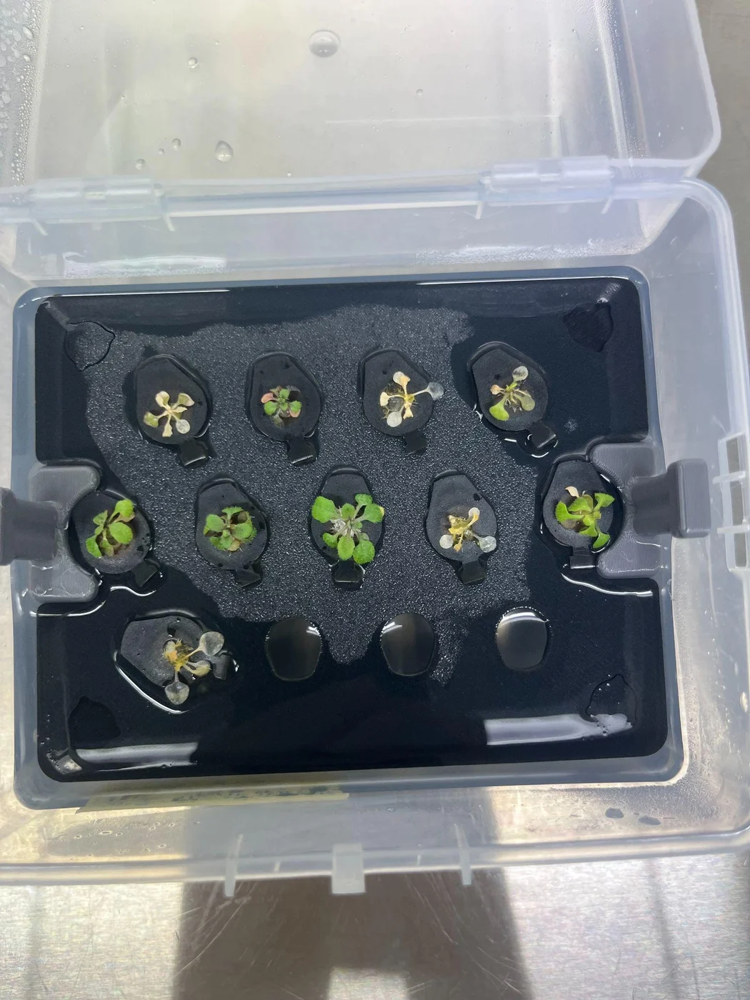
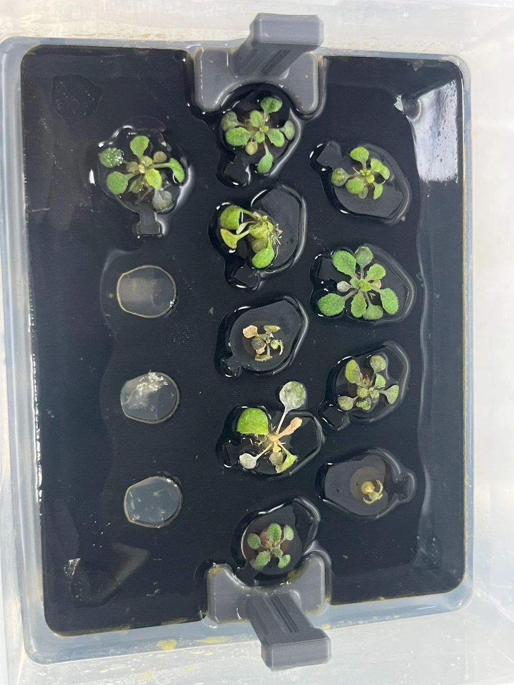
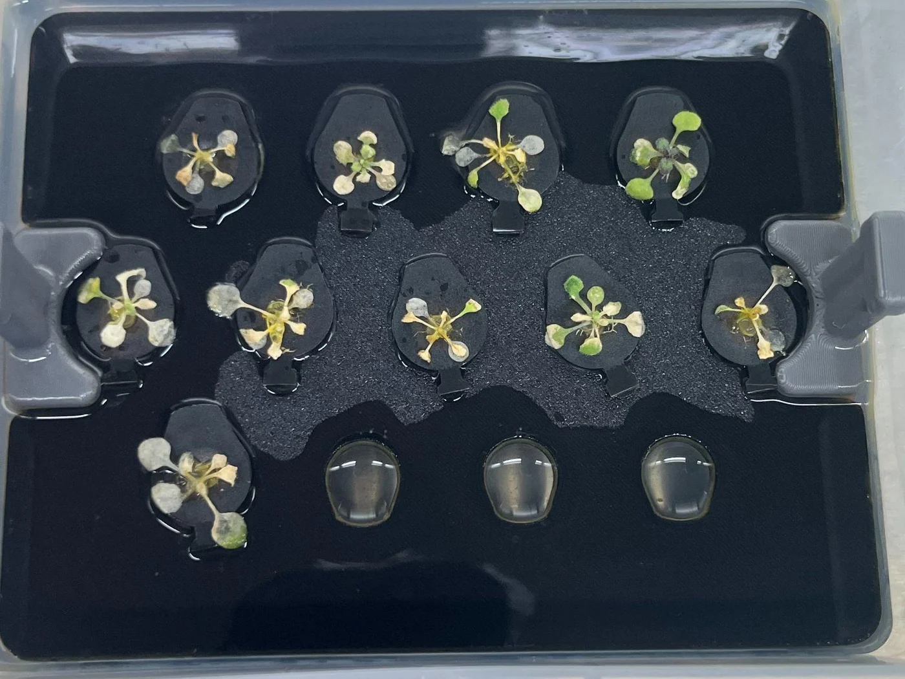
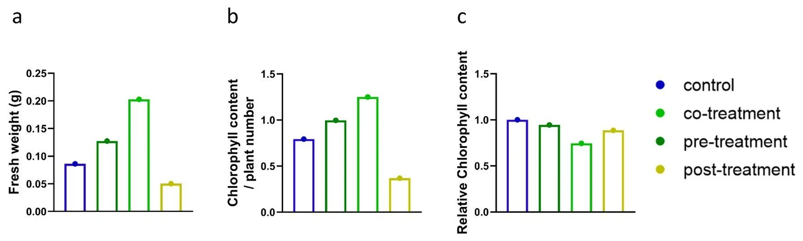
The co-treatment group showed higher rescue effectiveness based on the observation of rosette leaf area and also chlorophyll content. After 7 days of salinity stress, most leaves in the co-treatment group remained green, whereas leaves in the other treatment groups turned yellow or white. Moreover, the co-treatment group had the highest fresh weight and chlorophyll contents, showing that the co-treatment group grew the best.
Our second set of pre-tests is heat stress testing, where 12-day-old Arabidopsis were treated at 37 °C for 7 days. Except for the control group, CH Bio peptide was applied with a duration of 1 day at 3 different time periods: 1 day before heat treatment (pre-treatment), simultaneously with heat treatment (co-treatment), and 1 day after heat was applied (post-treatment). No obvious difference was shown between the treatment groups based on observation of plant size and color.
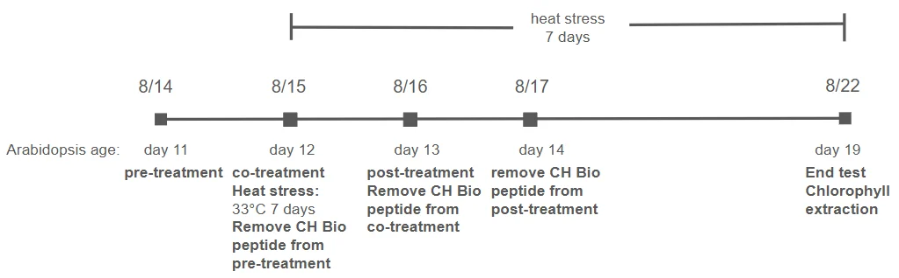
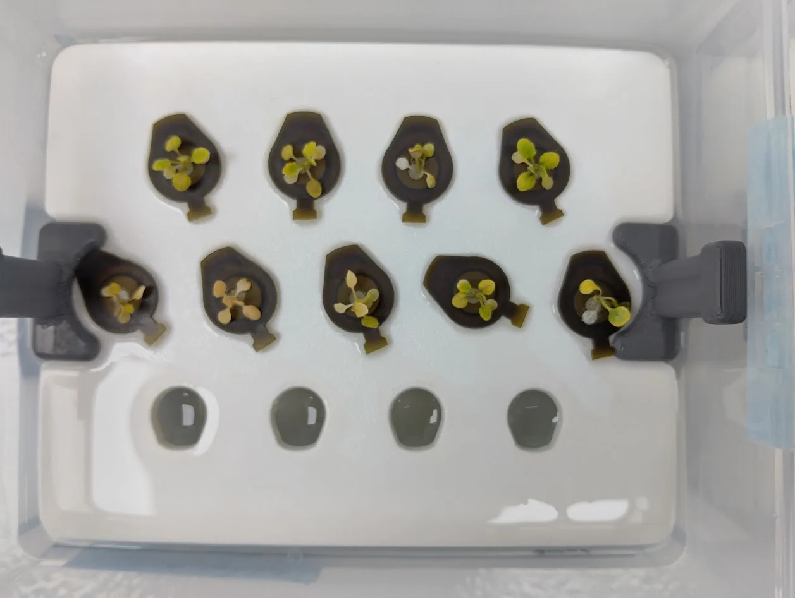
The pre-treatment groups hold a relatively high fresh weight among all the groups, and the control and pre-treatment groups carry similar amounts of chlorophyll, which puts CH Bio peptide on the positive side for plant growth. The relative chlorophyll content goes the other way: every treatment sits below the control. We take the inconsistency to be failed manual operation on our side.
Before applying target protectants to plants, the B. subtilis-only control is pretested to exclude the buffer effect on the plant. Therefore, different dilution factors of B. subtilis-containing TB medium were prepared as follows: 0, 1, 1/2, 1/4, 1/8 and 1/16.
In addition, the pH of the 0.1× MS medium is originally 5.7, which is suitable for plant growth. However, the optimal pH for the activity of 1-aminocyclopropane-1-carboxylate deaminase (ACCD) is 7.5 [19], which differs from the original pH. Therefore, we decided to set up two different pH conditions on plants. ACCD still holds about 75% of its activity at pH 7 [19], so we compared the growth of plants at two different pHs: pH 5.7 and pH 7.
Under both pH values, Arabidopsis applied with B. subtilis-containing medium all showed a significant stress response. The stress was most severe at the 1 and 1/2 dilution factors, where leaves turned yellow and the plants were small. Groups with 1/4, 1/8, and 1/16 showed significant accumulation of anthocyanin (a stress response), which can be seen by the darker green color of leaves. The only group with no stress response is the group without B. subtilis-containing TB medium, which shows a higher fresh weight and chlorophyll content than all the other treatment groups. Therefore, we concluded that concentrations greater than 1/16 can cause stress to plants, and concentrations lower than 1/16 will be used in further experiments.
To find out whether our protectants rescue Arabidopsis under salinity stress, 13-day-old plants were treated with 100 mM NaCl for 5 days and given ACC deaminase at several concentrations. ACC deaminase is a pyridoxal 5′-phosphate-dependent enzyme [20], and our own 2,4-dinitrophenylhydrazine assay showed it only turns over when PLP is there, so ACCD and PLP went on together, PLP at 1/100 in 0.1× MS medium.
After the experiment ended, Prof. Peng pointed out that we had not fixed the concentration of the B. subtilis-containing TB medium: raising the ACCD concentration raises the TB concentration with it. We cannot say whether the stress came from the TB medium or from the NaCl we added, so this run stands as preliminary data and not as a reading of what ACC deaminase does under salinity stress.
After 4 days at 37 °C, Arabidopsis had lost fresh weight and chlorophyll content sharply. The 1/40, 1/60 and 1/80 ACCD groups held higher fresh weights and higher chlorophyll contents than the controls, the 1/40 WB800 group and the 0.1× MS medium group. The 1/100 ACCD group came out close to the 1/40 WB800 group, both below the other treatments. ACC deaminase improves the heat resistance of Arabidopsis at concentrations of 1/80 or stronger.
BoPEP4 was carried on the same racks as the ACC deaminase heat run, at 1/40, 1/60, 1/80 and 1/100, against the 1/40 WB800 and 0.1× MS medium controls.
Heat at 37 °C did significant damage, taking fresh weight and chlorophyll content down with it. BoPEP4 gave a slight rescue at 1/40, with higher chlorophyll contents than both the 1/40 WB800 group and the 0.1× MS medium group. At 1/60, 1/80 and 1/100 there was no rescue, and chlorophyll contents stayed as low as the control. BoPEP4 gives Arabidopsis a slight rescue under heat stress at 1/40 or stronger.

Without salt, the plants given BoPEP4 from 1/40 to 1/100 accumulated anthocyanin, while the 1/40 WB800 group and the 0.1× MS medium group did not, which would mean BoPEP4 holds growth back when there is no stress for it to answer.
Under salinity stress most groups bleached and died. The group treated with 1/40 BoPEP4 is the exception: all of its plants stayed green, and it had the highest fresh weight and the highest chlorophyll content per plant. Some plants in the 0.1× MS medium group stayed green as well, with two of them bleaching. BoPEP4 at 1/40 or stronger improves the salinity tolerance of Arabidopsis, while weaker concentrations leave growth under salinity where it was.
We evaluated the two published methods of tuning salinity levels against each other, the sub-irrigation accumulation method from Kim et al. [8] and the top-down wash from Cheng et al. [9], on 2-week-old Arabidopsis. Seeds were stratified in 1 mL of sterile water for 4 days and dispersed into the soil pots with a micropipette, then selected for even rosette development. The accumulation method gave sequential sub-irrigation doses of 100 mM NaCl by tray capillary action, with plain water in between. The wash method gave sequential surface drenches of 100, 200 and 300 mM NaCl, 30 to 50 mL a pot, with no plain water in between, until the pot was saturated and the root zone had equilibrated. Phenotype, fresh weight and chlorophyll were taken at the end of the stress cycle.
The accumulation method did not impose enough osmotic stress. Its pots carried lush rosettes and an average fresh weight of about 0.42 g, because the plain water between doses flushed the accumulated ions out of the active root zone instead of letting them build up. The top-down drench came out at about 0.15 g, a reduction of roughly 64%, which is the salt holding back cell expansion and tissue water. It produces clear, reproducible growth inhibition and salt stress symptoms without immediate lethal necrosis, so it is the schedule for high-concentration soil screening even though its baseline biomass is lower. Both protocols gave comparable volumetric chlorophyll near 1.0 mg/L: under the milder accumulation stress pigment density stays high because chloroplast development is uninhibited, and under the wash the smaller rosette concentrates what pigment is left into less tissue.
The choice of salinity schedule decides whether an ACC deaminase effect can be seen at all. Salt-stressed plants accumulate 1-aminocyclopropane-1-carboxylic acid, the precursor of ethylene; ethylene has its own part in normal development and in the stress response, but too much of it under stress inhibits root elongation and growth. Orozco-Mosqueda et al. [24] review the evidence that plant-growth-promoting bacteria carrying ACC deaminase break that precursor down to ammonia and α-ketobutyrate, which lowers the excess and lets the plant keep growing in saline soil, and that biomass and growth traits are the right readouts for it. A treatment that barely inhibits growth leaves no room to tell protection from ordinary growth; one that destroys the tissue leaves no viable growth for a rescue to show up in. The lower mean fresh weight of the top-down drench puts it between the two, which is what the ACC deaminase runs need.
Summary
With the wash schedule settled, we tested three application timings of ACC deaminase, pre-treatment, co-treatment and post-treatment, under the NaCl wash of 100 mM, then 200 mM, until reaching a final concentration of 300 mM NaCl.

By eye, pre- and co-treatment did not hold off the bleaching; post-treatment did, a little. The two chlorophyll readouts rank the timings differently. Normalized to fresh weight, co-treatment comes out highest, 0.92 against 0.60 mg g−1 for the control, and it also carries the largest fresh weight of the four, 0.19 g. On the unnormalized extract the order reverses: post-treatment at 1.13 mg/L, the control at 1.00, pre-treatment at 0.67 and co-treatment last at 0.30. Post-treatment is the only timing above the control, by about 13%.
The schedule explains part of that. At 100 mM NaCl the stress symptoms were not obvious enough to read a rescue against; they appeared at 300 mM, which is why that level became the soil baseline. Post-treatment went on one day after the 300 mM wash, so it is a delayed co-treatment given once the stress had taken hold, while the co-treatment groups were dosed while the salt was still mild. What the run suggests is that ACC deaminase is worth giving at the point the stress is established rather than before it, and one soil set is not enough to settle it.
Summary
We tested three application timings of ACCD protectant, including pre-treatment, co-treatment, and post-treatment, under 37 °C in the incubator for a total heat stress period of 5 days, followed by 5 days of recovery at 25 °C in the growth chamber.
Our collaboration with the dry lab began with two practical questions: how much protectant would be required to improve plant performance, and how early would it need to be applied? Our plates hand the model three things.
Our original approach was to construct a dose-response curve using protectant concentration and a rescue index. Trehalose initially appeared suitable because we had conducted six experimental sets, but more measurements did not necessarily produce a more reliable relationship. In Set 3, two trials using the same design produced opposing trends, and because each condition was represented by a single plate, the seedlings on that plate could not be treated as independent replicates.
So we removed trehalose from the circuit design. A model should represent what the experiments can support, not force uncertain data into a quantitative relationship. The dose the model now carries, 1.67 mL per three sprays, is a dose that produced a rescue, so it stands as an upper bound on what a field would need.
The data we hold do not support a reliable dose-response fit, so we weighed four ways of using the plant results as they are.
Since July we have run the same design: the protectant goes on one day before the salt, with it, or one day after. That design exists because the dry lab asked whether a farm needs a prediction at all. If pre-treatment wins, ReLEAF needs a forecast; if co-treatment wins, it needs a full tank and a fast response, which is a different machine.
Four runs have reported and they do not agree. On agar at 75 mM, scored as fresh weight, pre-treatment wins. In soil at 300 mM, scored as chlorophyll per gram, co-treatment wins, and the commercial peptide at 100 mM also put co-treatment first. Under 37 °C thermo priming on agar, the second ACC deaminase trial puts post-treatment first, 14% above the heat-stressed control. The soil run cannot settle its own case: read as total chlorophyll, the same tubes put co-treatment last and post-treatment first, 13% above the untreated control.
Read together, the salt runs favor an early arrival and the heat run a late one, which is what the ethylene account behind ACC deaminase predicts: ACC accumulates as a salt stress builds, and again when a heat episode lifts. The forecast horizon is therefore a per-stress number in the model, not one constant for the whole farm.
Root length tracks growth inhibition, fresh weight tracks accumulated biomass, and chlorophyll tracks the photosynthetic tissue. We explored a stress index that compares each with the unstressed control from the same experiment, so that a value near 1 is the matched control and a value approaching 0 is severe impairment.
It also made data quality the central concern. Normalizing chlorophyll content by fresh weight can make severely stressed plants appear to have higher chlorophyll values because their biomass is lower, so we keep the original measurements beside the index.
The model has grown past predicting a protectant concentration. It ties historical weather and crop-yield data to a stress forecast, turns the demand that forecast implies into a response from the light-controlled production system, and uses the plant-treatment data to estimate what an application would take and where a field-scale constraint would bite.
Two of our measurements carry most of that weight: the response to salt, and the dose used in the treatment trials. In set 6, mean root length fell from 74.95 mm with no added salt to 34.77 mm at 75 mM, 11.00 mm at 100 mM and 1.36 mm at 150 mM. That is the empirical basis for telling moderate stress apart from conditions in which growth has all but stopped, and it is why stress calibration has to come before protectant screening: too severe a treatment leaves no room for an improvement to show.
Timing is the second link. ReLEAF is built to anticipate stress, so the model has to account for the time between starting production and applying the protectant, and our trials compare pre-, co- and post-treatment instead of concentration alone. The updated dataset suggests ACCD-containing supernatant before salt exposure may help; the evidence is preliminary, and it does not establish an optimal timing across replicated experiments.
The model also takes an initial DNPH-based activity estimate into its production and field-application figures. That measurement gave a signal, its estimated activity sat below the quantification limit of the assay, and it was not replicated, so what follows from it is a conditional projection and not a validated system capacity.
Between the bench and the model, the objective changed: from finding a curve that described the data we had, to naming the measurements a reliable model needs. As it stands the model is calibrated on two anchors, the salt ladder and the applied dose, and what it reports against them is a projection with both anchors named.
Between March and August we made thirteen visits involving researchers, farmers, agricultural businesses, and students. Each one exposed an assumption that was difficult to see from the bench. The full accounts are on Human Practices and Education.
We arrived with no plants and no protocol. She showed us how her group grows Arabidopsis on agar and in hydroponics, gave us seeds, and told us to start on agar plates before moving carefully to soil.
His vertical Arabidopsis plates inspired our own vertical plate rack, which let roots grow along a visible surface. He also suggested ramping soil salinity gradually, which Prof. Cheng later found too mild for older plants.
He prompted us to consider a recirculating hydroponic system and an automatically filled reservoir. Both carry the same requirement: a growing platform has to stay manageable across the weeks of a run, not only through a short demonstration.
We came back with two hydroponic boxes and one problem: contamination. She helped us standardize plant age, treatment timing and sample conditions, which is where the 2-week testing window and the three fixed timings come from.
We interviewed over 30 organic, smallholder farmers. Diseases and pests came up more than weather, and they are not against using technology in the field as long as it is affordable, accessible, and practical for their farms.
We helped harvest okra and luffa and watched her read soil and plants. A natural farmer, she reminded us that giving too much can take away a plant's ability to thrive on its own. Her worry about seeds lost to typhoons became our seed-exchange platform.
We left with 富肽2號, the peptide behind experiment set 7. Its active components were not disclosed to us, so we treat it as a product-level comparison rather than evidence for a specific compound.
Rows of stacked hydroponic racks next to our 250 mL box. We redesigned our float plate the same day (it now has thirteen planting positions) and took home one rule: minimize plant transfers, because transplantation itself can induce stress.

In “Plant Defenders”, elementary students watched spinach leaf disks float up a beaker as they photosynthesised and turned PET bottles into self-watering planters. At Fuxing High School on 14 August we went from DNA to food security, and learned to keep what a system is designed to do apart from what the evidence has shown.
Our plant experiments, bioreactor and Taiwan crop-stress map in one exhibition, with a forum of more than 50 farmers, experts and neighbours. Making a project accessible should not mean overstating what it has achieved.
The screen as it stands fixes the stress levels, the plant ages and the three application timings, and reports four protectants through them. Three measurements would turn what it reports into numbers a field could be designed around, and none of the three needs a method we have not already run.
Every protectant on this page went on at a single working dose, so a rescue sets an upper bound on what a plant needs and never locates a minimum. One plate carrying neat, 1:3, 1:10 and 1:30 arms of ACC deaminase, with the B. subtilis TB medium matched at each dilution, gives a half-maximal rescue concentration and settles the confound the hydroponic salinity run carries, where raising the enzyme raised its medium with it. That concentration is what the model needs in place of the 1.67 mL per three sprays it scales to a hectare today.
A condition held on one plate is one plate: the seedlings on it share a medium, a position in the growth chamber and any contamination that arrives, so they are sub-samples of a single unit. Three plates per condition, with the plate as the unit of analysis, is what would put the significance brackets on this page on the footing their stars imply, and it costs plate space and nothing else.
Pre-treatment leads the agar salinity sets, while post-treatment leads the second heat trial by 14% of the chlorophyll the heat-stressed control held, and the first heat trial ranks them the other way. Running the three timings again on one stress at a time, replicated and on uncontaminated plates, is what separates a real difference between salt and heat from the scatter of two single trials. The answer sets the forecast horizon the bioreactor runs against, so it is the measurement the rest of ReLEAF leans on hardest.
What the three platforms amount to is a working screen with its protocol written down: the stress levels and the plant ages that give a readable phenotype, the application methods each format allows, and the readouts to take on the harvest day. Another team can run a protectant of their own through it and compare the result with the four on this page.
A wet lab entry closes on the day it is written. A plant experiment does not: one set runs for days and sometimes weeks, and its milestones, from stratification and transfer through protectant application to harvest, sit far apart on the calendar. The plant notebook keeps each set together as one continuous record, from the first plate to the last reading. The protocols behind the entries are on Experiments, and the seven monthly wet lab notebooks are on Notebook.
Professor Kyle is a postdoc at NTU whose field is Arabidopsis. He met the sub-team on Wednesdays until the end of August and on Tuesdays from September, and each report carries the week’s photographs, his comments, and the problems going into the next week: contaminated plates, sinking float boards, the wrong ELISA wavelength.
Through the last weeks the sub-team wrote the next day out as a forecast and then closed it off as a progression, so the two lines under one date show what was planned beside what happened. The log starts on 30 September and runs past the last meeting, so it overlaps the two October reports.